一文学会scFAST-seq数据分析
原文：https://mp.weixin.qq.com/s?__biz=MzAwMzIzOTk5OQ==&mid=2247505213&idx=1&sn=5f4ed0587dd96149d127a98d36f721f0&chksm=9b3cac6dac4b257bbc00c4647382d27883139bf06ab3071947bf1cccde8d1d501006dabab5f1#rd 合集：单细胞教程全收录
学习手册

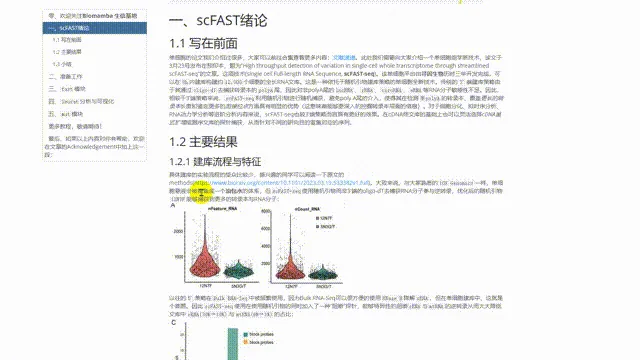
与以往的教程一样，我们给大家准备了数据分析的学习手册，目前分为scFAST绪论、准备工作、fast模块、Seurat分析与可视化、mut模块等五节内容及对应测试文件(更多章节持续创作中)，大家可以添加企业微信回复关键字"scFAST学习手册即领 ":

一、scFAST绪论
1.1 写在前面
单细胞的论文我们介绍过很多，大家可以前往合集查看更多内容：文献速递。此处我们需要向大家介绍一个单细胞组学新技术，该文于3月23号发布在预印本，题为”High throughput detection of variation in single-cell whole transcriptome through streamlined scFAST-seq”的文章。这项技术(single cell Full-length RNA Sequence, scFAST-seq)。该单细胞平台由寻因生物 历时三年开发完成，可以在8h内建库构建约12,000个细胞的全长RNA文库。这是一种依托于随机引物建库策略的单细胞全新技术。传统的3'端建库策略由于其通过oligo-dT去捕获转录本的polyA尾，因此对非polyA尾的lncRNA、rRNA、circRNA、eRNA等RNA分子敏感性不足。因此，相较于3‘端策略来说，scFAST-seq利用随机引物进行随机捕获，避免poly A尾的介入，使得其在检测非polyA的转录本、覆盖 更长的转录本 长度和鉴定更多的 剪接位点 方面具有明显的优势（这意味着能够更深入的挖掘转录本层面的信息）。对于细胞分化、拟时序分析、RNA动力学分析等进阶分析内容来说，scFAST-seq也较3’端策略而言具有更好的效果。在cDNA终文库的基础上也可以灵活选择 cDNA巢式扩增 或测序文库的探针捕获，从而针对不同的研究目的富集对应的序列。
视频教程可见(文末阅读原文可跳转)：https://www.bilibili.com/video/BV1F94y1879j/
1.2 主要结果
1.2.1 建库流程与特征
具体建库的实验流程的受众比较少，感兴趣的同学可以阅读一下原文的methods(https://www.biorxiv.org/content/10.1101/2023.03.19.533382v1.full)。大致来说，与大家熟悉的10X Genomics一样，单细胞悬液会被制备成一个油包水 的体系，但scFAST-seq使用随机引物而非3’端的oligo-dT去捕获RNA分子参与逆转录，优化后的随机引物12N7F能够捕获到更多的转录本与RNA分子：
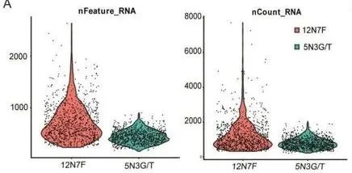
以往的5'策略在Bulk RNA-Seq中被频繁使用，因为Bulk RNA-Seq可以很方便的使用RNase H降解rRNA，但在单细胞建库中，这就是个难题。因此scFAST-seq使用在使用随机引物的同时加入了一种”阻断”探针，能够特异性的 阻断rRNA与mtRNA的逆转录从而大大降低文库中rRNA(30%→10%)与mtRNA(6%→1%)的占比：
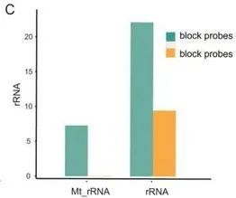
scFAST-seq的流程示意图如下所示：
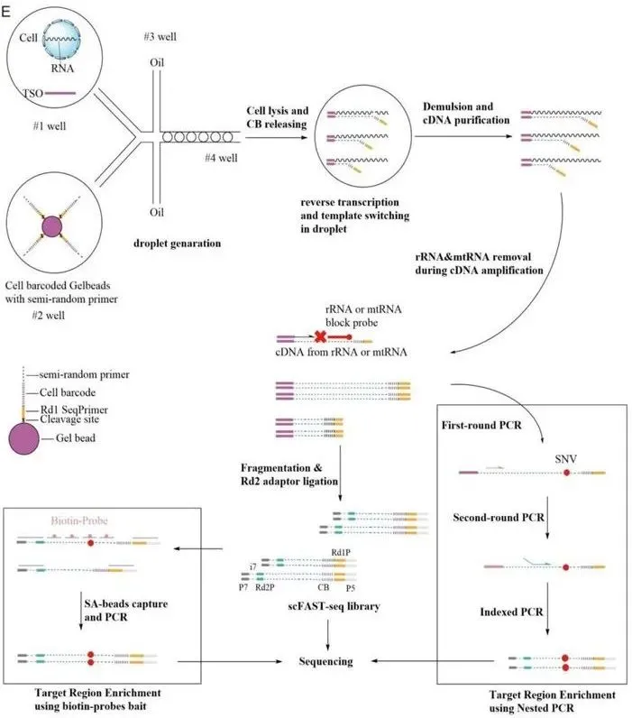
1.2.2 scFAST-seq与3'策略的scRNA-seq一致性评价
作者对K562、A549、HCC827混合细胞系、乳腺癌、胶质母细胞瘤、小鼠胰腺癌、外周血等样本分别进行了scFAST-seq与3'策略的scRNA-seq的测序，与上文表述的一样，scFAST-seq获得的mtRNA与rRNA数量都更少(图A)。与此同时，scFAST-seq的reads分布在基因中的位置更加的均匀，而不是像3'测序那般主要集中在RNA分子的3'端(图B)；这显然更有利于 转录本结构 的研究。在基因定量方面，相关性分析(图D)、降维分析(图E)与细胞比例分析(图F)均显示scFAST-seq与3' scRNA-seq具有极为相似的表达矩阵；infercnv分析方面两种技术的一致性极高(图G)。但在转录本的捕获数量上而言，在对应样本中scFAST-seq依旧是更胜一筹(图C)。
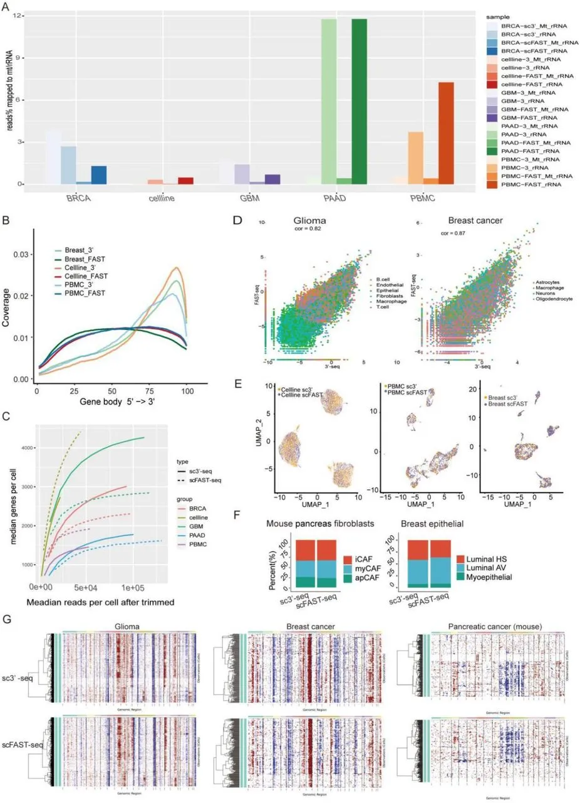
1.2.3 scFAST-seq与目的区域富集技术的结合
期望简单的通过增大测序量来增大目的区域的reads数是不切实际的，因此通过生物素探针或巢式PCR可以提升目的区域的捕获效率，例如EGFR 19del可通过生物素探针 提升近一倍(图A)、巢式PCR也可以在少量的细胞中捕获到更多对应的转录本(图B)。scFAST-seq与目的区域富集策略的结合可以用最低的测序成本获取更多的目的信息。
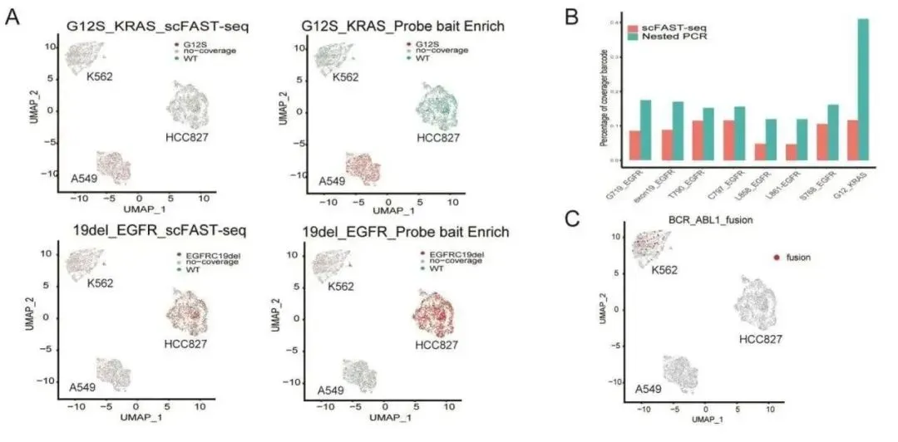
1.3 小结
作为全序列的产品，相较于3’单细胞测序而言，其有以下优势：
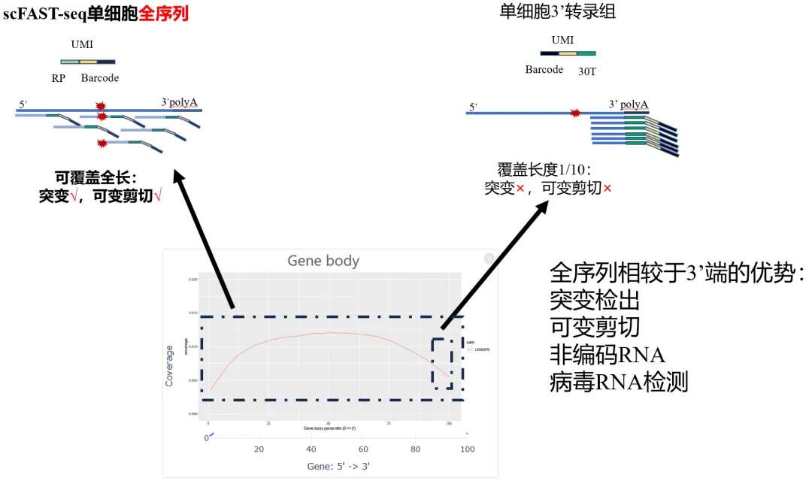
作为一款对标SMART-Seq2的国产测序技术，scFAST-seq的表现十分优秀。scFAST-seq与SMART-Seq2对比可见：
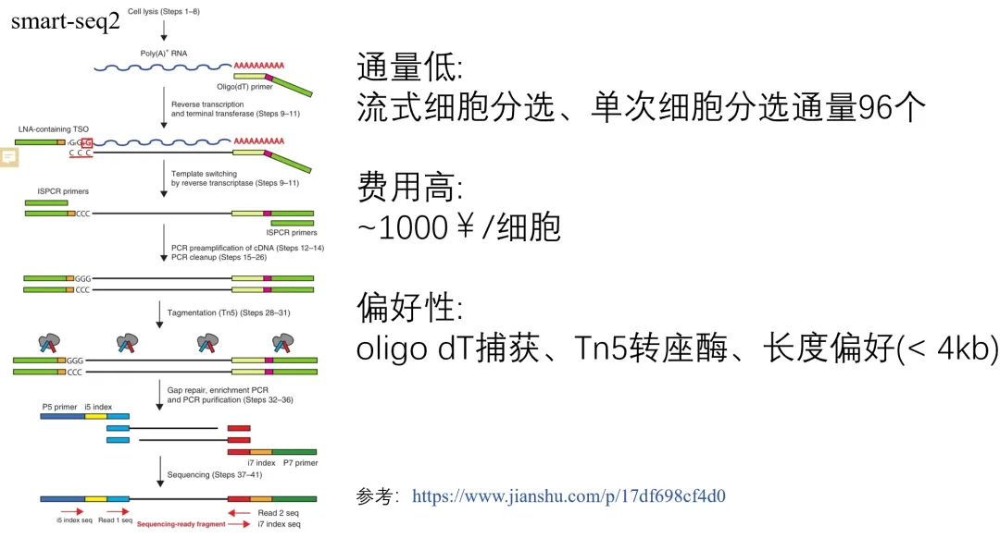
当然，scFAST-seq也并不是没有缺点，其对于低丰度的转录本捕获效率稳定性不足。为寻因生物点赞的同时也期待单细胞领域出现越来越多有竞争力的国产平台！
二、准备工作

scFAST学习资料可添加文末企业微信 领取，本节的视频教程可见(点击文末阅读原文可跳转)：
https://www.bilibili.com/video/BV1F94y1879j?p=2
2.1 SeekSoul®Tools简介
``
2.1.1 简介
SeekSoul® Tools是寻因自主研发的单细胞数据自动化质控分析软件，包括细胞标签提取、测序数据质控、参考基因组比对、基因定量以及表达矩阵构建等流程。兼容寻因生物SeekOne® MM、SeekOne® DD不同单细胞技术平台数据，实现高水平质控分析。
2.1.2 模块组成
目前该软件包含三个模块:
-（1）rna模块
用于识别细胞标签barcode，比对定量，得到可用于下游分析的细胞表达矩阵，之后进行细胞聚类和差异分析，该模块不仅支持SeekOne系列试剂盒产出数据，还可通过对barcode的描述，支持多种自定义设计结构。
-（2）fast模块
该模块专门针对SeekOne全序列试剂盒产出的数据，用于对数据进行barcode提取，双端reads比对，定量，以及全序列数据特有的指标统计
-（3）mut模块
该模块针对 SeekOne全序列(scFASTA-seq)数据及panel捕获后数据变异检测及可视化分析。
2.1.3 软件优势
1、灵敏检测低UMI细胞：采用高UMI阈值+EmptyDrops的方法判定细胞； 2、支持多平台数据分析：适配寻因自主平台及10x 等其他平台数据； 3、分析结果格式支持下游多种开源软件。
2.2 预备知识
为了无障碍的学习本教程，建议先行学习以下教程：
2.2.1 单细胞教程全收录
B站视频:先看一遍视频再去看推送操作，建议至少看三遍 以下的资料都可以在这里订阅： 单细胞数据基础分析学习手册
1. 单细胞测序基础数据分析保姆级教程 ，代码部分整理在往期推送之中：
手把手教你做单细胞测序数据分析（一）——绪论 手把手教你做单细胞测序数据分析（二）——各类数据结构与读取方法 手把手教你做单细胞测序数据分析（三）——单样本分析 手把手教你做单细胞测序数据分析（四）——多样本整合 手把手教你做单细胞测序数据分析（五）——细胞类型注释 手把手教你做单细胞测序数据分析（六）——组间差异分析及可视化 手把手教你做单细胞测序数据分析（七）——基因集富集分析
2. 上游fastq 文件处理：
单细胞分析的最上游——处理Fastq文件：cellranger 单细胞分析的最上游——处理Fastq文件：dropseqRunner 有奖提问,这个smart-Seq2数据实战的比对率为何如此低？
3. 细胞通讯
B站连续播放起来比较方便 往期推送 单细胞测序数据进阶分析—《细胞通讯》1.概论 单细胞测序数据进阶分析—《细胞通讯》2.1CellChat基础分析教程 单细胞测序数据进阶分析—《细胞通讯》2.2CellChat多组别分析 给你们申请到了免费的128GB云服务器
4. 拟时序分析
B站连续播放起来比较方便 往期推送 单细胞测序数据进阶分析—《拟时序分析》1.概论 单细胞测序数据进阶分析—《拟时序分析》2.monocle概论 单细胞测序数据进阶分析—《拟时序分析》3.monocle2实操：完整版 单细胞测序数据进阶分析—《拟时序分析》4.初识monocle3 单细胞测序数据进阶分析—《拟时序分析》5.monocle3的降维、分群、聚类 单细胞测序数据进阶分析—《拟时序分析》6.monocle3的拟时序分析 单细胞测序数据进阶分析—《拟时序分析》7.解决monocle2的orderCells报错的两种方法 一文搞定拟时序分析的下游可视化探索
5. 其他单细胞相关技术贴 :
细胞的数量由誰决定？ 单细胞中应该如何做GSVA？ 答读者问（三）：单细胞测序前景 答读者问（四）：如何分析细胞亚群 答读者问（八）：为什么Read10X也会报错? 答读者问（十）整合后的表达矩阵，如何拆分出分组信息？ 答读者问（十一）如何一次性读取一个目录下的cellranger输出文件？ 给你安排一个懂生信的工具人（十）：不学编程 零代码完成单细胞测序数据分析：Loupe Browser 什么？不做单细胞也能分析细胞类群和免疫浸润？ 答读者问 （十三）查看Seurat对象时的ERROR：type=‘text’ 各类单细胞对象（数据格式）转换大全（一） 批量整理好GEO中下载的单细胞数据 答读者问 （十四）Seurat中分类变量处理技巧 答读者问 （十五）稀疏矩阵转matrix, as.matrix函数是下下策 答读者问 （十六）做单细胞测序到底需要多少内存 答读者问 （十七）调用的线程越多就算的越快嘛? 答读者问（十八）、一个我至少被问过30遍的monocle报错 一文搞定单细胞基因集评分 沉浸式统计细胞比例 没有barcode文件的单细胞数据要怎么读取 单细胞基因集评分之AUCell 如何加快Seurat的计算速度 粉丝来稿|1. Seurat4相较于Seurat3的几点改动 如何加快Seurat的计算速度 答读者问（二十）四个单细胞样本只给了一套文件怎么读 人类单细胞测序数据中有哪些以”**-“开头的基因 为什么总把分辨率调的很高 答读者问（六）：Seurat中如何让细胞听你指挥
6. 单细胞文献阅读
Biomamba助推的第二篇文章!发表了！ 又来了！Biomamba生信基地助推的第四篇文章! 单细胞测序解析糖尿病肾病中肾小球的动态变化 单细胞测序技术解析健康人与T2D患者的胰岛差异 小鼠全肾单细胞测序开篇之作 Nature也能白嫖？ 一篇不花钱就能白嫖的文章 高氧下小鼠肺发育损伤的ScRNA图谱 文献阅读（十二）、IgAN & STRT-Seq 老树开新花——EGFR、肿瘤、免疫+scRNA-Seq 癌前基质细胞驱动BRCA1肿瘤发生 文献阅读（十八）、紧跟生信”钱”沿,胰腺癌&免疫多模态图谱 文献阅读（十九）、原发头颈癌和肿瘤转移微生态 文献阅读（二十一）、肾脏疾病&代谢&核受体ESRRA 文献阅读（二十二）、PD-1&急性髓细胞性白血病&T Cell 文献阅读（二十二）、PD-1&急性髓细胞性白血病&T Cell 文献阅读（二十三）鼻咽癌微环境&scRNA 文献阅读(二十四)、《Nature》：MYB调控衰竭性T细胞对检查点抑制的响应 文献阅读(二十八)、单细胞都能活检测序了？ 文献阅读(二十九)、单细胞测序做到什么程度能毕业|硕士篇 文献阅读(三十)、单细胞测序做到什么程度能毕业|博士篇 2022年了，都有哪些器官/组织有scRNA-Seq数据|小鼠篇 2022年了，都有哪些器官/组织有scRNA-Seq数据|人类篇 终于读到一篇用monocle3做拟时序的文章 单细胞转录组+亚细胞空间代谢组=25分文章
7. 单细胞注释复写
单细胞注释复写(一):Human Fetal Kidney 单细胞注释复写(二):Human colorectal
8. 非技术帖
生信分析为什么要使用服务器？ 有root权限的共享服务器,报我名字立减200￥ 为实验室准备一份生物信息学不动产
2.2.2 Linux基础教程
B站爆款视频同步播出 Linux| 一.计算机硬件组成 Linux| 二.计算机软件组成与Linux Linux| 三.免费获得Linux系统-WSL Linux| 四.免费获得Linux系统-虚拟机 Linux| 五.免费获得Linux系统-服务器 Linux| 五.免费获得Linux系统-服务器 Linux| 六.命令行与与基本命令 Linux| 七.获取Linux命令帮助的几种方式 Linux| 八.Linux的文件目录系统 Linux| 九.路径查看与切换: pwd,cd,ls命令 Linux| 十.通配符 Linux| 11.文件删除: rm命令 Linux| 12.文件的复制(cp)与移动(mv) Linux| 13.用户与组群概念 Linux| 14.用户管理命令(useradd, passwd, userdel, su) Linux| 15.文件权限管理: chown, chmod Linux| 16.快捷键 Linux| 17.输出重定向 Linux| 18.管道符 Linux| 19.文件查找 find, locate, which Linux| 20.别名 alias Linux| 21.软链接与硬链接ln Linux| 22. (解)压缩与md5值校验 Linux| 23. 文件查看 wc, cat, head, tail Linux| 24. 文件浏览器 more,less Linux| 25. 文件编辑器 vim Linux| 26. 文件处理 cut, paste Linux| 27. 文件处理 sort, uniq Linux| 28. 正则表达式 Linux| 29. 文本处理 grep Linux| 30. 文本处理 sed命令 Linux| 31. 文本处理 awk命令 Linux| 32. shell脚本 Linux| 33. shell变量 Linux| 34. if条件语句 Linux| 35. 循环
2.2.3 R语言教程
持续更新中，敬请期待：生信R语言保姆级教程
2.2.4 服务器准备
下列教程实测至少需要4核以及60GB的内存，如果自己电脑不满足计算要求的同学可以参考以下内容：
生信分析为什么要使用服务器？
独享服务器，满足你对生信分析的所有幻想
为实验室准备一份生物信息学不动产
2.3 依赖工具下载
2.3.1 conda与mamba
# 下载Anaconda：
wget https://mirrors.tuna.tsinghua.edu.cn/anaconda/archive/Anaconda3-5.3.1-Linux-x86_64.sh
# 安装：
bash Anaconda3-5.3.1-Linux-x86_64.sh
# 疯狂按回车，遇到询问输出yes，注意vs code安装询问选择no
# 利用conda安装mamba，后者与前者功能相同，但运行速度更快：
conda install mamba
2.3.2 gffread
用于后面的gff文件转gtf文件，用mamba装起来很方便
# 一行搞定:
mamba install gffread
# 当然你也可以自行从github抓取并安装：
# 安装gffread
# 下载文件：
git clone https://github.com/gpertea/gffread
# 切换工作路径：
cd gffread
# 编译安装：
make release
# 切换工作路径：
cd ../
2.3.3 annovar安装及库文件下载
# annovar下载配置：
wget http://www.openbioinformatics.org/annovar/download/0wgxR2rIVP/annovar.latest.tar.gz
# 以上链接可能会失效，如失效可在百度云盘中下载：https://pan.baidu.com/s/1bWbNbOrXHUpeu0qSJv49ig?pwd=ptey
# 解压：
tar -xvf annovar.latest.tar.gz
# 切换工作路径：
cd annovar
# 大约花费一个小时，具体取决于机器硬件配置与网速：
perl annotate_variation.pl -buildver hg38 --downdb --webfrom annovar refGene humandb/
perl annotate_variation.pl -buildver hg38 --downdb --webfrom annovar gnomad312_genome humandb/
perl annotate_variation.pl -buildver hg38 --downdb --webfrom annovar exac03 humandb/
perl annotate_variation.pl -buildver hg38 --downdb --webfrom annovar avsnp150 humandb/
perl annotate_variation.pl -buildver hg38 --downdb --webfrom annovar 1000g2015aug humandb/
perl annotate_variation.pl -buildver hg38 --downdb --webfrom annovar clinvar_20220320 humandb/
perl annotate_variation.pl -buildver hg38 --downdb --webfrom annovar cosmic70 humandb/
# 更改文件名，方便后续mut模块调用：
mv hg38_gnomad312_genome.txt hg38_gnomad.txt
mv hg38_clinvar_20220320.txt hg38_clinvar.txt
mv hg38_cosmic70.txt hg38_cosmic.txt
mv hg38_avsnp150.txt hg38_avsnp.txt
mv hg38_exac03.txt hg38_exac.txt
# 将annovar路径添加致配置文件中：
echo "export PATH=/home/biomamba/analysis/xunyin/annovar:$PATH" >> ~/.bashrc
source ~/.bashrc
2.3.4 fastp下载安装
fastp用于原始fastq文件过滤生成clean fastq
# 下载：
wget http://opengene.org/fastp/fastp
# 无需安装，赋予运行权限即可
chmod a+x ./fastp
2.4 SeekSoul®Tools下载与安装
本手册用到的所有资料均可在文末领取
当前教程演示的是seeksoultools 1.0 版本制作
seeksoul tools 软件由寻因生物公司 负责开发和维护，更新版本的seeksoul tools 软件见http://seeksoul.seekgene.com/
# 下载上述软件后，在Linux终端中进行安装
# 创建文件夹：
mkdir -p seeksoultools
# 切换工作目录
cd seeksoultools
# 解压
tar zxf seeksoultools_fast_mut_dev.tar.gz
# 激活seeksoultools环境
source seeksoultools/bin/activate
# 利用conda配置软件
seeksoultools/bin/conda-unpack
# 将文件安装地址配置到环境变量PATH中：
export PATH=`pwd`/seeksoultools/bin:$PATH
# 将配置写入~/.bashrc，这样每次登入服务器时均会生效
echo "export PATH=$(pwd)/seeksoultools/bin:\$PATH" >> ~/.bashrc
# 安装起来总体比较智能，上述步骤没报错即为成功
# 所以，我的工作路径在：
cd /home/biomamba/analysis/xunyin/
2.5 参考基因组下载及索引构建
# 创建文件夹：
mkdir my_refference
# 切换工作目录：
cd my_refference
下文教程为人类来源细胞系数据，因此我们以人类参考基因组的两个版本GRCh38与hg38为例。
2.5.1 GRCh38
这一步，你可以选择直接下载构建好的参考基因组，或者自行构建
(1) 直接下载
# wget下载：
wget -c -O GRCh38.tar.gz "https://seekgene-public.oss-cn-beijing.aliyuncs.com/software/data/reference/GRCh38.tar.gz"
# 解压：
tar -zxvf GRCh38.tar.gz
# 或者通过curl下载：
curl -C - -o GRCh38.tar.gz "https://seekgene-public.oss-cn-beijing.aliyuncs.com/software/data/reference/GRCh38.tar.gz"
# 解压
tar -zxvf GRCh38.tar.gz
(2) 自行构建
# 下载GRCh38基因组fatsq文件：
wget https://ftp.ncbi.nlm.nih.gov/refseq/H_sapiens/annotation/GRCh38_latest/refseq_identifiers/GRCh38_latest_genomic.fna.gz
# 下载GRCh38基因组gff注释文件：
wget https://ftp.ncbi.nlm.nih.gov/refseq/H_sapiens/annotation/GRCh38_latest/refseq_identifiers/GRCh38_latest_genomic.gff.gz
gunzip ./*gz
# 将gff文件转换为gtf文件：
gffread GRCh38_latest_genomic.gff -T -o GRCh38_latest_genomic.gtf
# 运行STAR构建基因组索引，我的机器上大约花费1.5h，具体时长需要取决于你的硬件条件：
nohup STAR \
--runMode genomeGenerate \
--genomeDir /home/biomamba/analysis/xunyin/seeksoultools/my_refference/GRCh38_index \ # 基因组索引输出路径
--genomeFastaFiles /home/biomamba/analysis/xunyin/seeksoultools/my_refference/GRCh38_latest_genomic.fna \ # 基因组fastq文件
--sjdbGTFfile /home/biomamba/analysis/xunyin/seeksoultools/my_refference/GRCh38_latest_genomic.gtf \ # 基因组注释gtf文件地址
--sjdbOverhang 149 \ # 读段长度，PE150则填149
--runThreadN 8 & # 并行计算调用的线程数
# 构建好后待后续调用
2.5.2 hg38
### hg38 ####
# 创建目录：
mkdir /home/biomamba/analysis/xunyin/seeksoultools/my_refference/hg38/
# 更改工作路径：
cd hg38
# 我的机器花费五分钟，主要取决于网速：
wget --timestamping 'ftp://hgdownload.cse.ucsc.edu/goldenPath/hg38/chromosomes/*'
# 解压
gunzip ./*gz
# 合并fastq文件：
cat ./*fa > hg38.fa
# 下载基因组注释gtf文件：
wget https://hgdownload.soe.ucsc.edu/goldenPath/hg38/bigZips/genes/hg38.refGene.gtf.gz
# 解压：
gunzip hg38.refGene.gtf.gz
# 运行STAR构建索引：
nohup STAR \
--runMode genomeGenerate \
--genomeDir /home/biomamba/analysis/xunyin/seeksoultools/my_refference/hg38/hg38_index \
--genomeFastaFiles /home/biomamba/analysis/xunyin/seeksoultools/my_refference/hg38/hg38.fa \
--sjdbGTFfile /home/biomamba/analysis/xunyin/seeksoultools/my_refference/hg38/hg38.refGene.gtf \
--sjdbOverhang 149 \
--runThreadN 8 &
2.5.3 rRNA基因组索引
# rRNA基因组
wget -c -O hg38_rRNA.tar "https://seekgene-public.oss-cn-beijing.aliyuncs.com/software/data/reference/hg38_rRNA.tar.gz"
# 解压
tar -zxvf hg38_rRNA.tar
三、fast模块
本节视频教程可见B站(文末阅读原文可直接跳转)：
https://www.bilibili.com/video/BV1F94y1879j?p=3
3.1 rna模块说明
3.1.1 算法及流程说明
当前教程基于seeksoultools 1.0 版本制作
seeksoul tools 软件由寻因生物公司 负责开发和维护，更新版本的seeksoul tools 软件见http://seeksoul.seekgene.com/
rna模块：用于识别细胞标签barcode，比对定量，得到可用于下游分析的细胞表达矩阵，之后进行细胞聚类和差异分析，该模块不仅支持SeekOne系列试剂盒产出数据，还可通过对barcode的描述，支持多种自定义设计结构。
- Step1: barcode/umi提取 seeksoultools可以根据不同的R1结构设计和每种结构的不同的参数对barcode/umi提取和处理，对R1以及对应的R2进行过滤，生成新的R2文件。
结构描述，以下的两种R1结构为例： MM: B8L8B8L10B8U8（错位设计)
DDV2: B17U12
B表示barcode部分碱基；
L表示linker部分碱基；
U表示umi部分碱基；
X表示任意碱基，用于占位；
字母后数字表示碱基长度。
错位设计的Anchor定位
有些设计下，为了使测序reads碱基多样性，加入了1-4bp的移码碱基，即anchor；anchor决定了barcode的起始位置。seeksoultools尝试在R1序列前7个碱基中寻找Anchor序列，若没找到anchor序列，此条read以及对应的R2被认为是无效read。
Barcode和Linker矫正
Barcode序列有一定几率发生测序错误的情况，在提供有白名单的情况下，seeksoultools可以实现barcode矫正功能。当barcode存在于白名单中时，我们认为它是有效的barcode，统计有效barcode对应的reads数量。当barcode不存在于白名单中时，我们认为它是无效的barcode。在开启矫正功能时，当无效barcode一个碱基错配（一个hamming distance）的序列存在于白名单中，我们会进行以下几种处理：
只有唯一一个序列存在于白名单中：我们将这个无效barcode矫正为白名单中barcode。
有多个序列存在于白名单中，且有至少一个序列的read支持数 大于0 ：
如果只有一个序列的read支持数大于0，我们将这个 无效barcode 改为这个序列且保留这条read。如果有多个序列的read 支持数大于0，我们将这个无效barcode 改为read支持数量最多的序列。其余情况：这条read以及对应的R2为 无效 read。
Linker的处理与Barcode相同。
接头和PolyA序列剪切 在转录组产品中，Read2的末端有可能会出现polyA tail或建库时引入的接头序列。这些序列并没有有效信息。为了节省计算时间和复杂度，我们要这些序列进行切除。剪切完的read2长度需要大于设定的最小长度来保证有足够的信息，准确比对到基因组的位置。如果剪切完成后的read2长度小于最小长度，我们认为这条read为无效read。
指标统计

total: 总共的reads数目
valid: 不需要矫正和矫正成功的reads数目
B_corrected: 矫正成功的reads数目
B_no_correction: 错误Barcode的reads数目
L_no_correction: 错误Linker的reads数目
no_anchor：不包含anchor的reads数目
trimmed: 进行过剪切的reads数目
too_short: 进行过剪切后长度小于60bp的reads数目
指标之间的关系如下： total = valid + no_anchor + B_no_correction + L_no_correction 输出fastq的reads数：total_output = valid - too_short
- Step2: 进行比对并找到比对基因
序列比对
使用
STAR比对软件将处理后的R2比对到参考基因组上。使用qualimap软件和转录本注释文件GTF，统计reads比对外显子、内含子和基因间区等的比例。使用featuresCounts将比对上的read注释到基因上，可以选择不同的注释规则，如链方向性和定量的feature。当使用外显子定量时，当read超过50%碱基比对到外显子区域时，认为该read来源于此外显子以及外显子对应的基因；当使用转录本定量时，当read超过50%碱基比对到转录本区域时，认为该read来源于此转录本以及转录本对应的基因。
指标统计
Hide
Reads Mapped to Genome: 能比对到参考基因组上的reads占所有reads的比例（包括只有一个比对位置和多个比对位置的reads）
Reads Mapped Confidently to Genome: 在参考基因组上只有一个比对位置的reads占所有reads的比例
Reads Mapped to Intergenic Regions：比对到基因间隔区reads占所有reads的比例
Reads Mapped to Intronic Regions：比对到内含子reads占所有reads的比例
Reads Mapped to Exonic Regions：比对到外显子reads占所有reads的比例
- Step3: 定量
UMI 定量
为了得到每个
barcode下基因的表达数据，seeksoultools以barcode为单位提取featureCounts输出的bam数据，统计注释到基因的umi和umi对应的reads数：
过滤掉对应UMI为单个重复碱基的reads， 例如UMI为TTTTTTTT 过滤掉注释到多个基因的reads
UMI矫正
UMI序列也有一定概率出现测序错误的情况。seeksoultools会尝试对UMI进行矫正。当同一个barcode中的某一个特定基因对应有两个UMI序列只有一个碱基错配时（一个hamming distance），reads支持数低的UMI将被纠正为reads支持数高的UMI。
细胞判定
在一个细胞群中，我们认为细胞和细胞的mRNA的含量不会相差太多。如果一个barcode对应的mRNA的含量很低，我们认为这个barcode的磁珠并没有捕获细胞，mRNA来源于背景。 seeksoultools 会以上面的规则，进行barcode是否为细胞的判定。有以下几个步骤：
对所有barcode按照对应的UMI数由高到低排序；取预估细胞的1%位置的barcode的UMI数除以10为阈值； barcode的UMI数大于阈值的判定为细胞； barocde的UMI小于阈值，但大于300时，使用DropletUtils分析。DropletUtils方法先假设UMI数量低于100的barcode为empty droplet，然后根据每个droplet相同基因的UMI数总和为背景RNA表达谱中该基因UMI数目，进而得到基因UMI数目的期望值。再通过将每个barcode的UMI数进行统计学检验，显著差异的为细胞；不符合上述条件的为背景。
指标统计
Estimated Number of Cells：判定的细胞总数
Fraction Reads in Cells: 判定为细胞的reads占所有参与定量的reads的比例
Mean Reads per Cell: 细胞的平均reads数，总reads数/判定的细胞数
Median Genes per Cell: 判定为细胞的barcode对应genes的中位数
Median UMI Counts per Cell: 判定为细胞的barcode对应UMI的中位数
Total Genes Detected: 所有细胞检测到基因数量
Sequencing Saturation: 饱和度，1 - UMI总数/reads总数
- Step4: 后续分析 得到表达矩阵后，我们可以进行下一步的分析。
Seurat分析流程 使用Seurat计算线粒体含量，细胞中UMI总数，细胞中基因总数。之后对矩阵进行归一化、寻找高变基因、降维聚类之后寻找差异基因。当然，我们也会在下面的教程中给大家详解Seurat运行过程。
3.2 fast模块说明
fast模块的参数、结果以及算法绝大部分与rna模块一致，有如下几点区别 1、fast针对全序列数据，保留了reads1去除barcodeUMI等部分后的数据，进行双端比对，并基于此结果后续进行分析 2、fast中增加了一些全序列数据特有指标：（1）核糖体含量 （2）以及数据biotype占比饼图: （3）genebody图及ACTB覆盖度；（4）lnc基因数量
3.3 fast模块使用
3.3.1 rna模块参数
rna模块中的大部分参数在fast模块中同样适用，因此需要先掌握此部分内容：
-
--fq1 R1 fastq数据路径。
-
--fq2 R2 fastq数据路径。
-
--samplename 样本名称，会在outdir目录下创建以样本名称命名的目录。仅支持数字，字母和下划线。
-
--outdir 结果输出目录。默认值：./。
-
--genomeDir
STAR构建的参考基因组路径, 版本需要与seeksoultools使用的STAR一致。 -
--gtf 相应物种的gtf路径。
-
--core 分析使用的线程数。
-
--chemistry 试剂类型，每种对应一组
--shift、--pattern、--structure、--barcode和--sc5p的组合，可选值：DDV1，DDV2，DD5V1，MM，MM-D，DD-Q；DDV1对应DD平台3’转录组V1版本试剂；DDV2对应DD平台3‘转录组V2版本试剂；DD5V1对应DD平台5‘转录组V1版本试剂；MM对应MM平台3’转录组数据；MM-D对应MM大孔径；DD-Q对应DD全序列。 -
--shift 使用移码设计。
-
--pattern 移码设计设计中用于锚定起始的碱基。
-
--structure ⽤于描述
read1的接头结构，B表示cellbarcode，L表示linker，U表示UMI，后⾯数字表示碱基⻓度，⽐如B9L12B9L13B9U8；如果是P3CBGB类的结构，只有barcode和UMI，没有linker，structure参数就是B17U12。 -
--barcode
barcode文件路径。 -
--linker
linker文件路径。 -
--skip_misB
barcode不允许碱基错配，默认允许一个碱基错配。 -
--skip_misL
linker不允许碱基错配，默认允许一个碱基错配。 -
--skip_multi 舍弃能纠错为多个白名单
barocde的reads，默认纠错为比例最高的barcode。 -
--sc5p 不启用时，分析5’转录组；启用时，分析5’转录组需。
-
--expectNum 预估的捕获细胞数目。
-
--forceCell 当正常分析得到的细胞数⽬不理想时，选⽤此参数，后⾯加⼀个预期的数值
N，seeksoultools软件会按照UMI从⾼到低取前N个细胞。 -
--include-introns 不启用时，只会选择
exon reads⽤于定量；启用时，intron reads也会⽤于定量。 -
--star_path 指定其他版本的
STAR路径进行比对，版本需要与--genomeDir版本兼容，默认的--star_path为环境下的STAR。
3.3.2 fast模块使用实战
(1)fastp指控原始fastq数据
我们采用trim的方式截去测序数据的测序接头和低质量片段，从而高效地利用测序数据，后续分析都基于clean data。在进行原始数据Trimming时我们使用 fastp软件（ Chen S，et al. 2018），处理具体如下：①截去低质量reads，使用滑动窗口的方式，4个碱基为一个窗口，若该窗口的平均碱基质量值低于10，则从该处截去reads， 参数选择：–cut_front, –cut_front_window_size 4, –cut_front_mean_quality 10；②截去 reads 尾部质量低于3或者含N（N 表示无法确定碱基信息）的 reads，参数选择: –cut_tail, –cut_tail_window_size 1, –cut_tail_mean_quality；③截去接头序列（–detect_adapter_for_pe ）；④经上述处理后，过滤掉短于 60 bp的 reads，及其paired reads。 -l or --length_required 60 双端测序需要加上： --detect_adapter_for_pe
fastp -i cellline_test/cellline_R1_001.fastq.gz -I cellline_test/cellline_R2_001.fastq.gz \
-o cellline_test/cellline_R1_001.clean.fastq.gz -O cellline_test/cellline_R2_001.clean.fastq.gz \
--cut_front –-cut_front_window_size 4 --cut_front_mean_quality 10 \
--cut_tail –-cut_tail_window_size 1 –-cut_tail_mean_quality \
--length_required 60 --detect_adapter_for_pe
# 运行提示：
# Detecting adapter sequence for read1...
# No adapter detected for read1
#
# Detecting adapter sequence for read2...
# >Illumina TruSeq Adapter Read 2
# AGATCGGAAGAGCGTCGTGTAGGGAAAGAGTGT
#
# Read1 before filtering:
# total reads: 18714992
# total bases: 2807248800
# Q20 bases: 2751519892(98.0148%)
# Q30 bases: 2642338596(94.1256%)
#
# Read2 before filtering:
# total reads: 18714992
# total bases: 2807248800
# Q20 bases: 2693483677(95.9475%)
# Q30 bases: 2530358229(90.1366%)
#
# Read1 after filtering:
# total reads: 18471287
# total bases: 2760865206
# Q20 bases: 2708982515(98.1208%)
# Q30 bases: 2602928318(94.2794%)
#
# Read2 after filtering:
# total reads: 18471287
# total bases: 2759509560
# Q20 bases: 2667685071(96.6724%)
# Q30 bases: 2511042682(90.996%)
#
# Filtering result:
# reads passed filter: 36942574
# reads failed due to low quality: 454502
# reads failed due to too many N: 222
# reads failed due to too short: 32686
# reads with adapter trimmed: 1054560
# bases trimmed due to adapters: 18837617
#
# Duplication rate: 14.048%
#
# Insert size peak (evaluated by paired-end reads): 224
#
# JSON report: fastp.json
# HTML report: fastp.html
#
# fastp -i cellline_test/cellline_R1_001.fastq.gz -I cellline_test/cellline_R2_001.fastq.gz -o cellline_test/cellline_R1_001.clean.fastq.gz -O cellline_test/cellline_R2_001.clean.fastq.gz --cut_front –-cut_front_window_size 4 --cut_front_mean_quality 10 --cut_tail –-cut_tail_window_size 1 –-cut_tail_mean_quality --length_required 60 --detect_adapter_for_pe
# fastp v0.23.4, time used: 157 seconds
(2)fast模块
seeksoultools fast run \
--fq1 /home/biomamba/analysis/xunyin/test_data/cellline_test/cellline_R1_001.clean.fastq.gz \
--fq2 /home/biomamba/analysis/xunyin/test_data/cellline_test/cellline_R2_001.clean.fastq.gz \
--samplename cellline \
--outdir /home/biomamba/analysis/xunyin/cellline_out \
--genomeDir /home/biomamba/analysis/xunyin/seek_ref/GRCh38/star \
--gtf /home/biomamba/analysis/xunyin/seek_ref/GRCh38/genes/genes.gtf \
--include_introns \
--rRNAgenomeDir /home/biomamba/analysis/xunyin/seek_ref/hg38_rRNA/star \
--rRNAgtf /home/biomamba/analysis/xunyin/seek_ref/hg38_rRNA/genes/delete_rRNA5.8-18-28_in_rRNA45s.gtf \
--core 8
输出目录下包含以下文件： /home/biomamba/analysis/xunyin/cellline_out ├── cellline_report.html ├── cellline_summary.csv ├── cellline_summary.json ├── step1 │ ├── cellline_1.fq.gz │ ├── cellline_2.fq.gz │ ├── cellline.cutTSO_1.fq.gz │ ├── cellline.cutTSO_2.fq.gz │ └── cellline_stat.fq.gz ├── step2 │ ├── featureCounts │ │ ├── cellline_SortedByCoordinate.bam.featureCounts.bam │ │ ├── cellline_SortedByName.bam │ │ ├── counts.txt │ │ └── counts.txt.summary │ └── STAR │ ├── cellline_Aligned.out.bam │ ├── cellline_Log.final.out │ ├── cellline_Log.out │ ├── cellline_Log.progress.out │ ├── cellline_SJ.out.tab │ ├── cellline_SortedByCoordinate.bam │ ├── cellline_SortedByCoordinate.bam.bai │ ├── cellline_SortedByName.bam │ ├── downbam │ │ ├── cellline.down.0.1.bam │ │ ├── cellline.down.0.1.bam.bai │ │ ├── cellline.geneBodyCoverage.curves.pdf │ │ ├── cellline.geneBodyCoverage.r │ │ └── cellline.geneBodyCoverage.txt │ ├── report.pdf │ ├── rnaseq_qc_results.txt │ └── rRNA │ ├── cellline_Aligned.out.bam │ ├── cellline_Log.final.out │ ├── cellline_Log.out │ ├── cellline_Log.progress.out │ ├── cellline_SJ.out.tab │ ├── cellline_SortedByName.bam │ ├── cellline.xls │ ├── counts.txt │ ├── counts.txt.summary │ ├── test.input.1.fq.gz │ └── test.input.2.fq.gz ├── step3 │ ├── counts.xls │ ├── detail.xls │ ├── filtered_feature_bc_matrix │ │ ├── barcodes.tsv.gz │ │ ├── features.tsv.gz │ │ └── matrix.mtx.gz │ ├── filtered_feature_bc_matrix_ │ │ ├── barcodes.tsv.gz │ │ ├── features.tsv.gz │ │ └── matrix.mtx.gz │ ├── fragment.xls │ ├── raw_feature_bc_matrix │ │ ├── barcodes.tsv.gz │ │ ├── features.tsv.gz │ │ └── matrix.mtx.gz │ └── umi.xls └── step4 ├── biotype_FindAllMarkers.xls ├── cellline.rds ├── FeatureScatter.png ├── FindAllMarkers.xls ├── lncgene_FindAllMarkers.xls ├── mito_quantile.xls ├── nCount_quantile.xls ├── nFeature_quantile.xls ├── resolution.xls ├── top10_heatmap.png ├── tsne.png ├── tsne_umi.png ├── tsne_umi.xls ├── umap.png └── VlnPlot.png
11 directories, 66 files
** **
四、Seurat分析及可视化
Seurat可谓是单细胞数据分析及可视化的神包，利用R语言分析单细胞不可不学的利器。这部分内容阅读有障碍的同学可以查看以下我们以往的教程：
单细胞测序基础数据分析保姆级教程 ，代码部分整理在往期推送之中：
手把手教你做单细胞测序数据分析（一）——绪论 手把手教你做单细胞测序数据分析（二）——各类数据结构与读取方法 手把手教你做单细胞测序数据分析（三）——单样本分析 手把手教你做单细胞测序数据分析（四）——多样本整合 手把手教你做单细胞测序数据分析（五）——细胞类型注释 手把手教你做单细胞测序数据分析（六）——组间差异分析及可视化 手把手教你做单细胞测序数据分析（七）——基因集富集分析
4.1 数据读取
# 设置工作目录
setwd('~/analysis/xunyin/')
# 加载R包
if (!require("Seurat", quietly = TRUE))install.packages("Seurat")
## Attaching SeuratObject
if (!require("BiocManager", quietly = TRUE))install.packages("BiocManager")
## Bioconductor version '3.15' is out-of-date; the current release version '3.17'
## is available with R version '4.3'; see https://bioconductor.org/install
if (!require("multtest", quietly = TRUE))install.packages("multtest")
##
## Attaching package: 'BiocGenerics'
## The following objects are masked from 'package:stats':
##
## IQR, mad, sd, var, xtabs
## The following objects are masked from 'package:base':
##
## anyDuplicated, append, as.data.frame, basename, cbind, colnames,
## dirname, do.call, duplicated, eval, evalq, Filter, Find, get, grep,
## grepl, intersect, is.unsorted, lapply, Map, mapply, match, mget,
## order, paste, pmax, pmax.int, pmin, pmin.int, Position, rank,
## rbind, Reduce, rownames, sapply, setdiff, sort, table, tapply,
## union, unique, unsplit, which.max, which.min
## Welcome to Bioconductor
##
## Vignettes contain introductory material; view with
## 'browseVignettes()'. To cite Bioconductor, see
## 'citation("Biobase")', and for packages 'citation("pkgname")'.
if (!require("dplyr", quietly = TRUE))install.packages("dplyr")
##
## Attaching package: 'dplyr'
## The following object is masked from 'package:Biobase':
##
## combine
## The following objects are masked from 'package:BiocGenerics':
##
## combine, intersect, setdiff, union
## The following objects are masked from 'package:stats':
##
## filter, lag
## The following objects are masked from 'package:base':
##
## intersect, setdiff, setequal, union
# 指定数据路径
data_dir <- "cellline_out/step3/filtered_feature_bc_matrix/"
list.files(data_dir)
## [1] "barcodes.tsv.gz" "features.tsv.gz" "matrix.mtx.gz"
#自动读取定量数据，格式为三个tsv或mtx文件
scFAST.data <- Read10X(data.dir = data_dir)
# 创建Seurat对象并初步过滤
# min.cells表示基因至少在几个细胞中表达，min.genes代表每个细胞中至少表达多少基因，细胞的平均reads数量> 5万一般比较好，否则需要补测：
scFAST <- CreateSeuratObject(counts = scFAST.data,
project = "cell_line", min.cells = 3,
min.features = 200)
4.2 数据预处理
# 通过线粒体的序列数来对数据进行计算线粒体mRNA百分比：
scFAST[["percent.mt"]] <- PercentageFeatureSet(scFAST,
pattern = "^MT-") # 小鼠数据需要换为mt
# QC的数据存在meta.data里，可以用这个来查看前5行
head(scFAST@meta.data, 5)
## orig.ident nCount_RNA nFeature_RNA percent.mt
## CAGGCCAGCTCACAGCC cell_line 341 281 0.5865103
## CCGGGTATACGAAGTCC cell_line 341 285 2.9325513
## GTGTGGCGCTGTACTAC cell_line 338 258 3.8461538
## TCAGCAACGATCCGCGA cell_line 341 275 1.1730205
## TCCCATGTACTAGTCCT cell_line 340 273 2.3529412
# 用小提琴图来展示QC的结果，展示了每个barcode中基因的数目、UMI数目以及线粒体基因含量的分布情况：
#pdf(file = 'Feature.Count.percent.mt.pdf',height = 6,width = 18)
VlnPlot(scFAST,
features = c("nFeature_RNA", "nCount_RNA", "percent.mt"),
ncol = 3)

#dev.off()
# 可视化：
plot1 <- FeatureScatter(scFAST, feature1 = "nCount_RNA", feature2 = "percent.mt")
plot2 <- FeatureScatter(scFAST, feature1 = "nCount_RNA", feature2 = "nFeature_RNA")
#pdf(file = '判断基因表达趋势.pdf',width = 12,height = 6)
CombinePlots(plots = list(plot1, plot2)) #高变基因，判断趋势及占比
## Warning: CombinePlots is being deprecated. Plots should now be combined using
## the patchwork system.

#dev.off()
# 质控，选子集，RNA数量在200与2500之间的，多的可能是低质量细胞或空drouplets，gene count多的可能是doublets or multiplets:
scFAST <- subset(scFAST, subset = nFeature_RNA > 200 &
nFeature_RNA < 2500 & percent.mt < 5)
# 用LogNormalize法对数据进行标准化（乘10000再取对数）数据存在scFAST[["RNA"]]@data.里
# 默认的方法也完成了log1p的操作，得到的结果就类似于TPM的对数:
scFAST <- NormalizeData(scFAST, normalization.method = "LogNormalize",
scale.factor = 10000)
# 筛选高变基因（输出2000个），用于下游的PCA及分群:
scFAST <- FindVariableFeatures(scFAST, selection.method = "vst",
nfeatures = 2000)
# 输出差异最大的十个基因:
top10 <- head(VariableFeatures(scFAST), 10)
plot1 <- VariableFeaturePlot(scFAST)
plot2 <- LabelPoints(plot = plot1, points = top10, repel = TRUE)
## When using repel, set xnudge and ynudge to 0 for optimal results
#输出差异基因散点图（有无标签）:
CombinePlots(plots = list(plot1, plot2))
## Warning: CombinePlots is being deprecated. Plots should now be combined using
## the patchwork system.

# 将数据进行归一化，为后续的PCA分析做准备，数据存在scFAST[["RNA"]]@scale.data
scFAST <- ScaleData(scFAST, features = rownames(scFAST))
## Centering and scaling data matrix
#scFAST <- ScaleData(scFAST)#only4VariableFeatures
# 回归计算消除无关的变量（如线粒体的比例）：
scFAST <- ScaleData(scFAST, vars.to.regress = "percent.mt")
## Regressing out percent.mt
## Centering and scaling data matrix
#scFAST[["RNA"]]@scale.data
# PCA降维分析：
scFAST <- RunPCA(scFAST,
features = VariableFeatures(object = scFAST))
## PC_ 1
## Positive: HBG2, HBG1, PRAME, CPED1, AL713998.1, GLUL, KCNH2, MPP1, PRKCB, RELN
## AC136431.1, LINC01287, CBFA2T3, FAM178B, NUP214, AC004949.1, AP000547.3, ANK1, AC097528.1, RHAG
## LYL1, LINC02476, ALDH1A2, CTCFL, SEPTIN5, GYPC, EPB41, AP001531.1, ZEB2, GATA1
## Negative: ASPH, EGFR, LCN2, KRT18, GAPDH, IGFBP3, CD44, VOPP1, KRT8, JUN
## LPP, NFKBIZ, SAA1, S100A10, CFB, AREG, CDH1, CDK4, EGR1, PGK1
## PIP4K2C, CCN1, MUC16, SOD2, KRT19, KRT7, AZGP1, UBC, PGM1, TGFBI
## PC_ 2
## Positive: FP236383.3, VOPP1, LCN2, EPCAM, SAA1, CDK4, EGFR, AZGP1, RPL7, PIP4K2C
## KRT19, HIST1H1B, CFB, CDH1, RNASET2, NFKBIZ, LAD1, SERPINB4, CCT6A, MUC16
## F3, LANCL2, ESRP1, ICAM1, SLC43A3, PDZK1IP1, CHCHD2, CLDN4, CDH3, GNS
## Negative: ALDH1A1, AKR1C2, CYP24A1, IGFBP4, AKR1C3, AKAP12, AKR1B1, PDE4D, VIM, ALDH3A1
## TPM2, AKR1B10, G6PD, AHNAK2, CA12, AKR1C1, PGD, TNS4, PDE10A, SERPINE1
## FTL, PBX1, NQO1, MYO1E, ANXA2, UGDH, CPLX2, THSD4, MAP1B, IGFBP7
## PC_ 3
## Positive: MKI67, HIST1H1C, RPS6, STMN1, RPL29, HSP90AA1, RPS8, MYH9, HMGB2, FLNA
## FTL, HIST1H1E, HSPA8, HIST1H2AI, PRRC2A, TUBB4B, RANBP1, SERBP1, INCENP, RPL24
## LDHB, PLEC, TOP2A, TPX2, CENPF, MRPL16, HSPD1, PPP1R15A, PRAME, ACTN4
## Negative: GAPDH, PTMA, IGFBP3, TRPC6, AC007325.2, PADI2, FGG, VOPP1, PLAAT4, NTS
## FGB, PLAAT3, SERPINB4, AZGP1, MUC4, FGA, LCN2, KRT18, SAA4, TCN1
## SUSD2, PEG10, HMOX1, LIPG, AC093817.2, SEMA3A, NUPR1, SLC16A5, TRIM31, C4orf19
## PC_ 4
## Positive: FN1, NEAT1, C3, CXCL8, ANXA4, IGFBP3, RCSD1, CD24, INSIG1, PHLDB2
## TNFAIP2, CFH, PNRC1, NDRG1, CXCL5, ARL15, DLK1, FNDC3B, STXBP5, CD53
## MAP1A, EPB41, LRMDA, IFNGR1, C1R, ADGRB3, RHAG, RND1, CFB, SOX6
## Negative: MKI67, KPNA2, TUBB4B, TPX2, TOP2A, CDCA3, ANLN, CENPF, NUSAP1, HIST1H1B
## AURKA, INCENP, HMGB2, CCNA2, KNSTRN, HIST1H1E, HIST1H2AB, ECT2, HIST1H2AI, RRM2
## PTMA, CDC20, CDCA8, H2AFX, KIF20A, PSRC1, FAM83D, CCNB1, PLK1, KIF2C
## PC_ 5
## Positive: KIF20A, RCSD1, CDC20, DLK1, CCNB1, CENPF, DLGAP5, ANXA1, KPNA2, AURKA
## PSRC1, CCNB2, ADGRB3, TOP2A, TPX2, CDCA3, CD53, ARL6IP1, ANTXR2, STXBP5
## NUSAP1, SOSTDC1, CALB1, SLAMF6, BUB1, CFH, SOX6, CD24, LYZ, MUC4
## Negative: HIST1H2AI, HIST1H1E, HIST1H1B, HIST1H2AB, HIST1H1C, HIST2H2AA4, HBG2, HIST2H2AC, HBG1, HIST1H2AJ
## HIST1H1D, HEMGN, SLC43A3, FAM178B, CA1, RRM2, PKLR, HIST2H2BF, FOSL1, CCN1
## ATF3, HIST1H2BK, MCM2, CCDC26, ATAD3B, SLC38A5, CDC45, KCNH2, RANBP1, SRM
# 打印PCA部分结果：
print(scFAST[["pca"]], dims = 1:5, nfeatures = 5)
## PC_ 1
## Positive: HBG2, HBG1, PRAME, CPED1, AL713998.1
## Negative: ASPH, EGFR, LCN2, KRT18, GAPDH
## PC_ 2
## Positive: FP236383.3, VOPP1, LCN2, EPCAM, SAA1
## Negative: ALDH1A1, AKR1C2, CYP24A1, IGFBP4, AKR1C3
## PC_ 3
## Positive: MKI67, HIST1H1C, RPS6, STMN1, RPL29
## Negative: GAPDH, PTMA, IGFBP3, TRPC6, AC007325.2
## PC_ 4
## Positive: FN1, NEAT1, C3, CXCL8, ANXA4
## Negative: MKI67, KPNA2, TUBB4B, TPX2, TOP2A
## PC_ 5
## Positive: KIF20A, RCSD1, CDC20, DLK1, CCNB1
## Negative: HIST1H2AI, HIST1H1E, HIST1H1B, HIST1H2AB, HIST1H1C
#pdf(file = 'PCA_点图.pdf',width = 10,height = 6)
VizDimLoadings(scFAST, dims = 1:2, reduction = "pca")

#dev.off()
# 三种PCA展示方式：
DimHeatmap(scFAST, dims = 1,
cells = 500, balanced = TRUE)
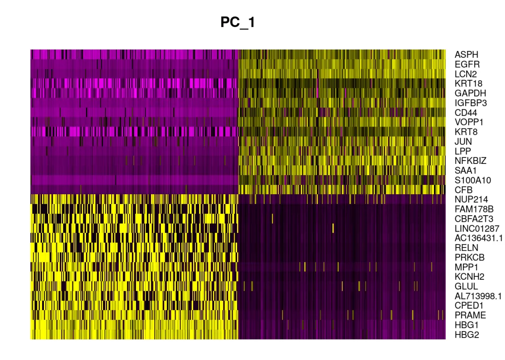
#pdf(file = 'PCA.heatmap.pdf',width = 15,height = 12)
# 展示15种PCA：
DimHeatmap(scFAST, dims = 1:15,
cells = 500, balanced = TRUE)

#dev.off()
# 筛选合适的维度：
# 重复计算次数：
scFAST <- JackStraw(scFAST, num.replicate = 100)
# 计算维度这一步花的时间比较久：
scFAST <- ScoreJackStraw(scFAST, dims = 1:20)
#pdf(file = 'jackstrawplot.pdf',width = 6,height = 6)
# JackStrawPlot相当于高级PCA，为挑选合适维度进行下游可视化提供依据：
# 画出1到15个维度：
JackStrawPlot(scFAST, dims = 1:15)
## Warning: Removed 21504 rows containing missing values (geom_point).
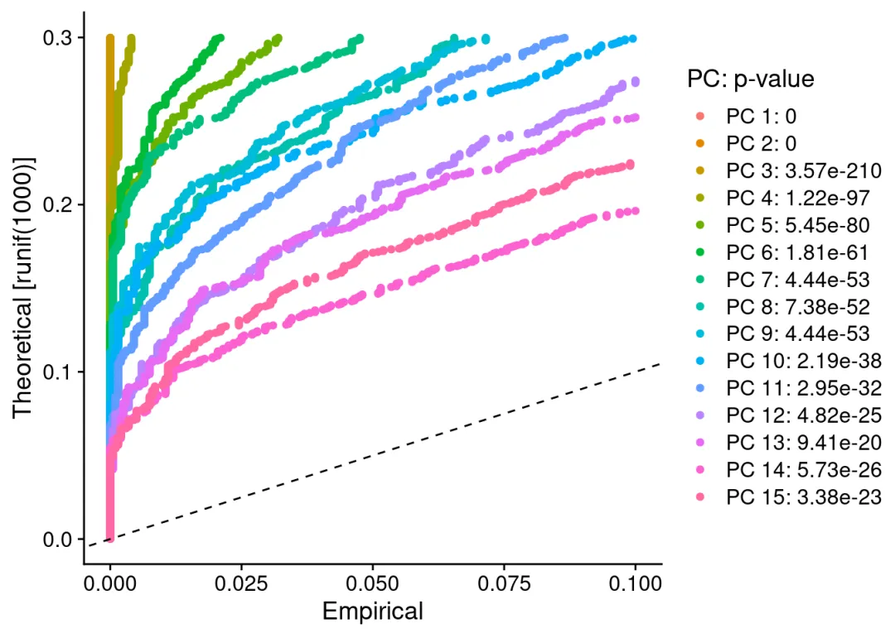
#dev.off()
# 利用ElbowPlot来评价PC，不可为了结果好看而降低PC数
#pdf(file = 'elbow.pdf',width = 6,height = 5)
ElbowPlot(scFAST)
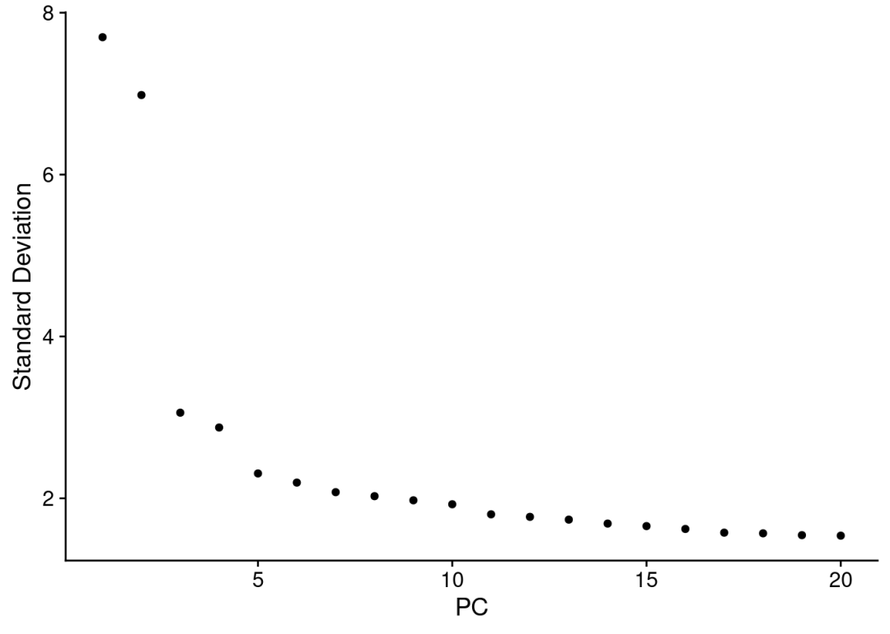
#dev.off()
4.3 降维、分群、注释
scFAST <- FindNeighbors(scFAST, dims = 1:11)
## Computing nearest neighbor graph
## Computing SNN
# 细胞分群，resolution分辨率在细胞数在3000附近时一般设为0.4-1.2，resolution越大得到的类群越多:
scFAST <- FindClusters(scFAST, resolution = 0.5)
## Modularity Optimizer version 1.3.0 by Ludo Waltman and Nees Jan van Eck
##
## Number of nodes: 4986
## Number of edges: 165138
##
## Running Louvain algorithm...
## Maximum modularity in 10 random starts: 0.8383
## Number of communities: 6
## Elapsed time: 0 seconds
# 看前五个分类群ID:
head(Idents(scFAST), 5)
## CAGGCCAGCTCACAGCC CCGGGTATACGAAGTCC GTGTGGCGCTGTACTAC TCAGCAACGATCCGCGA
## 2 2 0 1
## TCCCATGTACTAGTCCT
## 2
## Levels: 0 1 2 3 4 5
#非线性降维方法：UMAP、tSNE
# 运行UMAP算法:
scFAST <- RunUMAP(scFAST, dims = 1:11)
## Warning: The default method for RunUMAP has changed from calling Python UMAP via reticulate to the R-native UWOT using the cosine metric
## To use Python UMAP via reticulate, set umap.method to 'umap-learn' and metric to 'correlation'
## This message will be shown once per session
## 11:09:52 UMAP embedding parameters a = 0.9922 b = 1.112
## 11:09:52 Read 4986 rows and found 11 numeric columns
## 11:09:52 Using Annoy for neighbor search, n_neighbors = 30
## 11:09:52 Building Annoy index with metric = cosine, n_trees = 50
## 0% 10 20 30 40 50 60 70 80 90 100%
## [----|----|----|----|----|----|----|----|----|----|
## **************************************************|
## 11:09:53 Writing NN index file to temp file /tmp/RtmpBqtxhu/file8bf4d523b90af
## 11:09:53 Searching Annoy index using 1 thread, search_k = 3000
## 11:09:55 Annoy recall = 100%
## 11:09:56 Commencing smooth kNN distance calibration using 1 thread with target n_neighbors = 30
## 11:09:57 Initializing from normalized Laplacian + noise (using irlba)
## 11:09:57 Commencing optimization for 500 epochs, with 199020 positive edges
## 11:10:04 Optimization finished
# 运行TSNE算法，TSNE算法运行时间较UMAP更久:
scFAST <- RunTSNE(scFAST, dims = 1:11)
DimPlot(scFAST, reduction = "umap", label = TRUE)
# 计算cluster1相较于其它cluster的marker：
cluster1.markers <- FindMarkers(scFAST, ident.1 = 1,
min.pct = 0.25)
# roc算法计算cluster1的marker
cluster1.markers <- FindMarkers(scFAST, ident.1 = 0,
logfc.threshold = 0.25,
test.use = "roc",
only.pos = TRUE)
# 查看前五个标记基因：
head(cluster1.markers, n = 5)
## myAUC avg_diff power avg_log2FC pct.1 pct.2
## ALDH1A1 0.973 3.584375 0.946 5.171160 0.953 0.052
## CYP24A1 0.924 2.547823 0.848 3.675732 0.890 0.151
## AKR1C2 0.910 3.383152 0.820 4.880857 0.836 0.042
## PKM 0.879 0.872585 0.758 1.258874 0.993 0.881
## IGFBP4 0.863 2.537671 0.726 3.661086 0.747 0.043
# 寻找每一个分类群与其他所有细胞之间的标记基因，并只显示positive结果
scFAST.markers <- FindAllMarkers(scFAST, only.pos = TRUE,
min.pct = 0.25,
logfc.threshold = 0.25)
## Calculating cluster 0
## Calculating cluster 1
## Calculating cluster 2
## Calculating cluster 3
## Calculating cluster 4
## Calculating cluster 5
library(dplyr)
# 筛选出top10：
top10gene <- scFAST.markers %>% group_by(cluster) %>%
top_n(n = 10, wt = avg_log2FC)
# pdf(file = 'top10marker.pdf',width = 20,height = 100)
VlnPlot(scFAST, features = unique(top10gene$gene),
pt.size = 0,ncol = 4)

# dev.off()
VlnPlot(scFAST, features = unique(top10gene$gene),
pt.size = 0,stack = T)
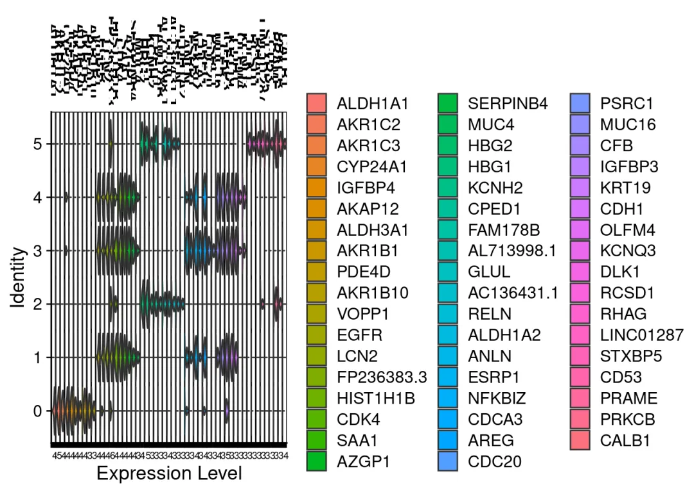
DimPlot(scFAST)
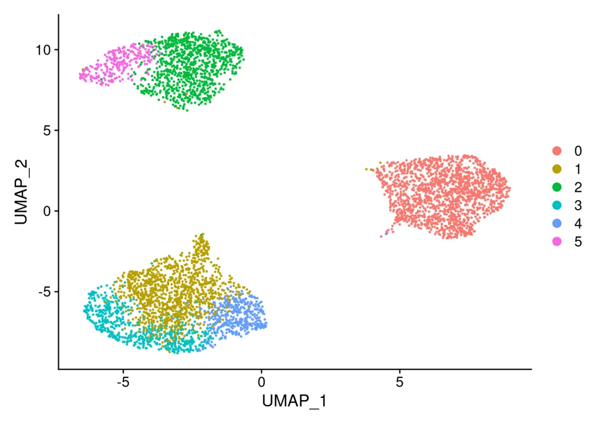
# 查看部分marker基因在FeaturePlot(以UMAP作为底图)中的表达情况：
FeaturePlot(scFAST,
features = unique(top10gene$gene)[1:9])

# 展示cluster标签
FeaturePlot(scFAST,
features = unique(top10gene$gene)[1:9],
label = T)
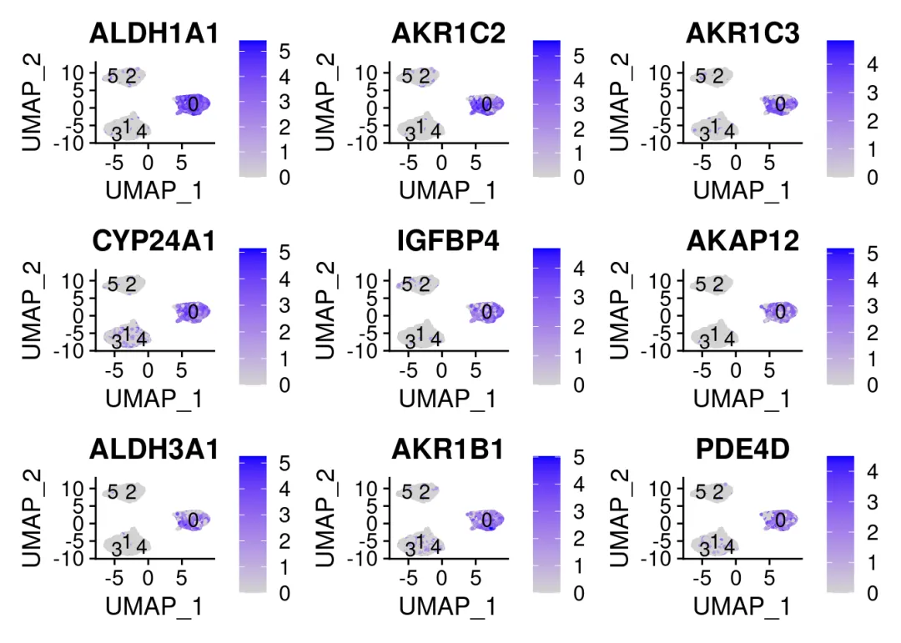
FeaturePlot(scFAST,
features = c("ALDH1A1","AKR1C2","AKR1C3","CYP24A1"))
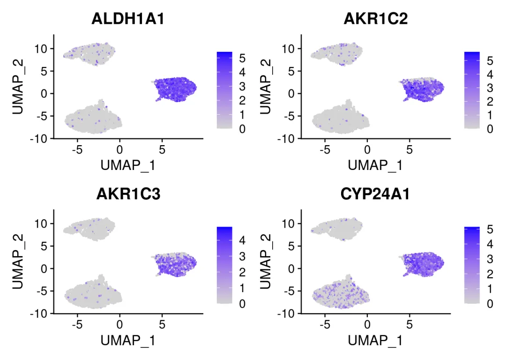
# 展示前10个标记基因的热图
top10 <- scFAST.markers %>% group_by(cluster) %>% top_n(n = 10, wt = avg_log2FC)
DoHeatmap(scFAST, features = top10$gene) + NoLegend()
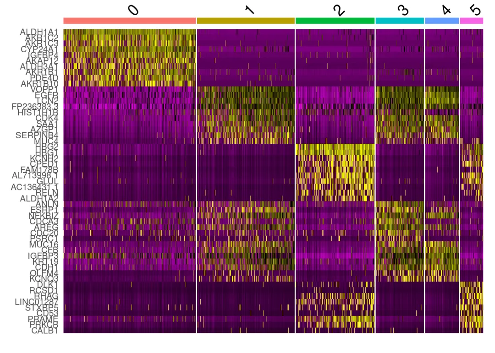
#通过标记基因及文献，可以人工确定各分类群的细胞类型，则可以如下手动添加细胞群名称：
# 重命名方法1：
new.cluster.ids <- c("Celltype_A", "Celltype_B","Celltype_C",
"Celltype_B","Celltype_B","Celltype_C")
names(new.cluster.ids) <- levels(scFAST)
scFAST <- RenameIdents(scFAST, new.cluster.ids)
scFAST$celltype <- Idents(scFAST)
# 重命名方法2
scFAST$celltype <- scFAST$RNA_snn_res.0.5
scFAST$celltype <- recode(scFAST$celltype,
'0'="Celltype_A",
'1'="Celltype_B",
'2'="Celltype_C",
'3'="Celltype_B",
'4'="Celltype_B",
'5'="Celltype_C")
Idents(scFAST) <- 'celltype'
# 计算重命名后的细胞类型marker
scFAST_rename_markers <- FindAllMarkers(scFAST, only.pos = TRUE,
min.pct = 0.25,
logfc.threshold = 0.25)
## Calculating cluster Celltype_A
## Calculating cluster Celltype_B
## Calculating cluster Celltype_C
# 筛选top5 maker
top5_rename <- scFAST_rename_markers %>% group_by(cluster) %>%
top_n(n = 5, wt = avg_log2FC)
# 利用堆积小提琴图查看表达情况：
VlnPlot(scFAST,
features = unique(top5_rename$gene),
stack = T)

# 求各个细胞类型基因的平均表达量：
cell.expr <-
log1p(AverageExpression(scFAST, verbose = FALSE)$RNA)
head(cell.expr)
## Celltype_A Celltype_B Celltype_C
## AL627309.1 0.00000000 0.000000000 0.28221346
## AL627309.2 0.00000000 0.006774702 0.01673949
## AL627309.5 0.04375944 0.116682264 0.20596967
## AP006222.2 0.01291225 0.013775439 0.56941424
## AL732372.1 0.00000000 0.009998963 0.01746337
## AC114498.1 0.00000000 0.010397461 0.03523540
DimPlot(scFAST, reduction = "umap",
label = TRUE, pt.size = 0.5) + NoLegend()
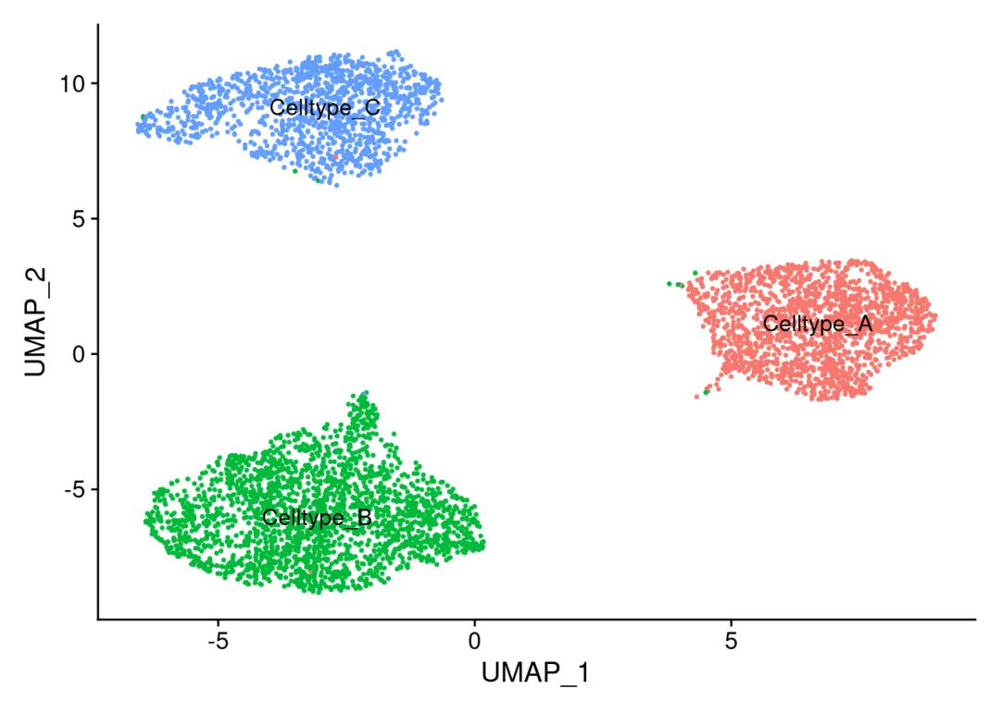
Idents(scFAST) <- 'celltype'
DimPlot(scFAST, reduction = "umap",
label = TRUE, pt.size = 0.5) + NoLegend()
可以如是完成数据的保存与再次读取：
# 创建目录：
dir.create('scFAST_out')
# 将Seurat对象保存为rds文件输出：
saveRDS(scFAST, file = "./scFAST_out/scFAST_fast.rds")
# 读取rds文件：
scFAST <- readRDS('./scFAST_out/scFAST_fast.rds')
** **
五、mut模块
5.1 简介
该模块用于分析panel数据或者全序列数据中的 变异信息 ，可以说是scFAST的特色分析模块。在该模块中，对可靠的突变位点会给出位点所在cluster、 barcode等信息，所以需要提供rds文件(即我们上一步中存出的scFAST_fast.rds文件)，因此，需要先利用seeksoultools等软件进行定量、分群之后再用此模块进行变异检测。panel的分析也是使用该模块完成的。
5.2 模块工作流程
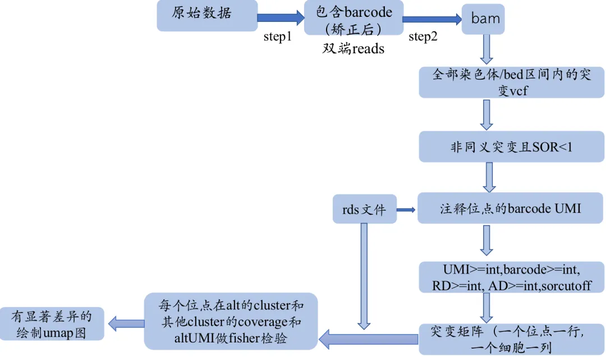
突变检测模块流程示意图
在将整体数据变异位点到单细胞维度时，利用了bam文件中每条reads的barcode和UMI信息。流程默认将 非同义突变 过滤，并且基于链偏好性对突变进行再一次的过滤。
我们使用 SOR（Symmetric Odds Ratio）值评估链偏好性。snv小于1.0、indel 默认小于10.0的所有位点进行reads统计，并且每个位点可给出一个中间文件（该文件生成与否根据_tmptype_参数设定），如下
BC_UMI BKGD/CB coverage alt ref1 ref2 alt1 alt2
CGTAGTACGAGCACGAA_CCCGCTTTCCTT cell 35 0 0 35 0 0
TGATCAGATGGTAACAC_ACTCCTTTCCAT cell 34 1 0 33 0 1
AGGATAATACACTACGA_CTGTCGATCCTT background 1 1 0 0 0 1
该文件记录突变位点中每一条UMI的ref alt reads数量，并依据此对位点进行了过滤，过滤条件如下：
（1）只有符合alt/coverage>=0.9(altvaf参数值)且coverage reads>=2(UMIreads参数值)的UMI才被认为是支持突变的UMI；
（2）支持突变的UMI数目>=2(umiint参数值)；
（3）支持突变的barcode数目>=2(bcint参数值)；
（4）位点总突变reads>=2(ADint数值)；
（5）位点覆盖reads>=2(DPint参数值)；
（6）snv的sor值<=1.0 indel的sor<=10.0(sorcut参数值) ；
（7）ExAC数据库中eas和All频率小于0.01；
（8）突变的vaf(alt reads/coverage reads) > 0.03 。经过如上8个步骤过滤的位点认为是最终的突变位点。
5.3 运行mut模块
5.3.1 输入文件准备
panel原始fastq数据（clean data；需要自行用fastp等软件处理下机数据）
-
STAR软件 可以选择本软件环境中的
STAR，也可以用外部STAR -
基因组fasta文件
-
STAR软件的参考基因组索引文件 需要注意STAR软件版本兼容问题 -
全序列数据（非panel数据） 处理得到的表达矩阵进行降维分群之后的文件，即我们上文保存的
scFAST_fast.rds文件 -
panel的bed文件 -
annovar软件及其
database可见2.3.3部分
5.3.2 运行mut模块
参数解释：
-
--fq1 panel R1 fastq数据路径。
-
--fq2 panel R2 fastq数据路径。
-
--genomeDir STAR软件构建的索引文件，注意需要与STAR软件版本兼容。
-
--star_path STAR软件的路径。
-
--fasta 参考基因组的fasta文件。注意，fasta文件的染色体名称需要与genomeDir的染色体名称保持一致。
-
--samplename 样本名称。
-
--outdir 结果目录。
-
--rds 全序列RNA表达矩阵的rds文件。
-
--annovarpl 下载的annovar软件路径。
-
--annovardb 下载的annovar数据库路径。
-
--ref 参考基因组版本。
-
--cellanno seurat_clusters或者CellType，默认为seurat_clusters，当rds文件是经过手动注释之后的rds文件时，将meta data细胞类型列命名为CellType，并将此参数设置为CellType。
-
--filted fsys。默认只保留非同义突变。
-
--tmptype 参数值为allreads时，每个位点在BC_UMI_reads_tmp路径下生成一个记录详细reads数目的文件。该参数值默认为txt，即不生成详细的文件。
-
--panel：panel的bed文件。此参数时，只对bed区间内进行变异检测，当不指定此参数的时候，会对全部reads进行变异检测。
# 任务比较大，将其丢到后台运行
nohup seeksoultools mut run \
--fq1 /home/biomamba/analysis/xunyin/test_data/cellline_test/cellline_R1_001.clean.fastq.gz \
--fq2 /home/biomamba/analysis/xunyin/test_data/cellline_test/cellline_R2_001.clean.fastq.gz \
--genomeDir /home/biomamba/analysis/xunyin/my_refference/hg38/ \
--fasta /home/biomamba/ext_data2/analysis/xunyin/my_refference/hg38/hg38.fa \
--samplename cellline \
--outdir /home/biomamba/analysis/xunyin/cell_line_mutout \
--rds /home/biomamba/analysis/xunyin/scFAST_out/scFAST_fast.rds \
--annovarpl /home/biomamba/ext_data2/analysis/xunyin/annovar/table_annovar.pl \
--annovardb /home/biomamba/ext_data2/analysis/xunyin/annovar/humandb \
--ref hg38 \
--filted fsys \
--cellanno celltype \
--core 4 2>&1 > mut.log &
5.3.3 输出结果
输出路径中包含的文件为：
tree cell_line_mutout
## [01;34mcell_line_mutout[00m
## ├── celllinebarcodelist.xls
## ├── [01;34mmutation_umap[00m
## │ ├── cellline_add_snv.rds
## │ └── [01;34mSNV_diff[00m
## │ ├── cellline_snv_markers.xls
## │ ├── [01;34mCelltype_A[00m
## │ │ ├── ANLN_chr7-36407745_-_TCT.png
## │ │ ├── ANP32E_chr1-150226713_T_C.png
## │ │ ├── CANX_chr5-179708267_G_T.png
## │ │ ├── CANX_chr5-179726685_A_G.png
## │ │ ├── CPPED1_chr16-12704775_C_G.png
## │ │ ├── CYBA_chr16-88643516_G_C.png
## │ │ ├── DBN1_chr5-177466941_C_T.png
## │ │ ├── FH_chr1-241497970_C_A.png
## │ │ ├── FUS_chr16-31190121_G_A.png
## │ │ ├── H2AC14_chr6-27814513_C_G.png
## │ │ ├── HLA-B_chr6-31356259_T_G.png
## │ │ ├── KIFBP_chr10-69000515_T_C.png
## │ │ ├── KRAS_chr12-25245351_C_T.png
## │ │ ├── NAMPT_chr7-106261662_T_C.png
## │ │ ├── NCOA4_chr10-46010599_C_T.png
## │ │ ├── NUDT3;RPS10-NUDT3_chr6-34293496_T_G.png
## │ │ ├── PCNT_chr21-46334596_A_G.png
## │ │ ├── PMPCB_chr7-103298662_G_A.png
## │ │ ├── PPP4R2_chr3-73065058_C_G.png
## │ │ ├── RALY_chr20-34077059_-_AGC.png
## │ │ ├── REST_chr4-56930473_T_C.png
## │ │ ├── SPTBN1_chr2-54643117_C_A.png
## │ │ ├── TBC1D23_chr3-100296189_C_A.png
## │ │ └── UNC93B1_chr11-67999234_G_A.png
## │ ├── [01;34mCelltype_B[00m
## │ │ ├── ARL6IP1_chr16-18794662_A_G.png
## │ │ ├── BAG3_chr10-119670133_G_A.png
## │ │ ├── CAP1_chr1-40070169_A_T.png
## │ │ ├── CCNDBP1_chr15-43191645_T_C.png
## │ │ ├── CCT8_chr21-29067014_C_T.png
## │ │ ├── CDCA5_chr11-65079463_C_T.png
## │ │ ├── CYBA_chr16-88647125_T_G.png
## │ │ ├── CYP1B1_chr2-38071060_G_C.png
## │ │ ├── DDX3X_chrX-41343348_A_C.png
## │ │ ├── DHX33_chr17-5461073_A_G.png
## │ │ ├── EEFSEC_chr3-128153739_G_A.png
## │ │ ├── GART_chr21-33534717_C_A.png
## │ │ ├── GART_chr21-33534718_A_T.png
## │ │ ├── HAVCR1_chr5-157052561_A_G.png
## │ │ ├── HMGA1_chr6-34243515_-_A.png
## │ │ ├── INO80_chr15-41079889_T_C.png
## │ │ ├── LRRC8D_chr1-89933402_A_G.png
## │ │ ├── MRPS7_chr17-75261947_C_T.png
## │ │ ├── PCIF1_chr20-45940563_G_A.png
## │ │ ├── PLD3_chr19-40378055_G_A.png
## │ │ ├── PLOD1_chr1-11965543_C_T.png
## │ │ ├── POLR1A_chr2-86089889_C_G.png
## │ │ ├── PPP4R3B_chr2-55617200_G_A.png
## │ │ ├── RRBP1_chr20-17616749_C_T.png
## │ │ ├── SERINC1_chr6-122451991_T_G.png
## │ │ ├── VPS35L_chr16-19699568_C_T.png
## │ │ ├── WASHC1_chr9-17843_C_A.png
## │ │ ├── WASHC1_chr9-18081_G_A.png
## │ │ ├── WASHC1_chr9-18143_C_T.png
## │ │ ├── WASHC1_chr9-18481_T_C.png
## │ │ ├── ZNF180_chr19-44479350_G_C.png
## │ │ ├── ZNF280A_chr22-22515221_G_T.png
## │ │ └── ZSCAN25_chr7-99619904_G_A.png
## │ └── [01;34mCelltype_C[00m
## │ ├── ACIN1_chr14-23079588_-_ACGTGA.png
## │ ├── CCAR2_chr8-22615709_G_T.png
## │ ├── CCDC34_chr11-27350364_G_T.png
## │ ├── CCDC74B_chr2-130141240_G_A.png
## │ ├── CDC20_chr1-43362992_G_A.png
## │ ├── DFFA_chr1-10469269_A_G.png
## │ ├── EGLN2_chr19-40807854_C_T.png
## │ ├── EIF3A_chr10-119051224_T_A.png
## │ ├── FAM185A_chr7-102751727_A_G.png
## │ ├── FBXO22_chr15-75904057_C_T.png
## │ ├── HDLBP_chr2-241256379_C_A.png
## │ ├── KIAA0100_chr17-28643219_C_A.png
## │ ├── KMT2D_chr12-49032947_GCT_-.png
## │ ├── LSM12_chr17-44038092_T_C.png
## │ ├── MDC1_chr6-30713191_C_T.png
## │ ├── MRPL20_chr1-1402212_G_C.png
## │ ├── NDUFC2;NDUFC2-KCTD14_chr11-78073109_-_A.png
## │ ├── NEK9_chr14-75124193_C_T.png
## │ ├── NFE2L2_chr2-177231803_G_C.png
## │ ├── NR1H2_chr19-50378574_-_CAG.png
## │ ├── PKP3_chr11-397348_A_G.png
## │ ├── PUS7_chr7-105508236_A_G.png
## │ ├── RAB5B_chr12-55992132_GGA_-.png
## │ ├── RTN3_chr11-63758191_-_A.png
## │ └── TSR2_chrX-54444542_A_G.png
## ├── [01;34mSTAR[00m
## │ ├── cellline_Aligned.out.bam
## │ ├── cellline_Aligned.sortedByCoord.out.bam
## │ ├── cellline_Aligned.sortedByCoord.out.bam.bai
## │ ├── cellline_Log.final.out
## │ ├── cellline_Log.out
## │ ├── cellline_Log.progress.out
## │ ├── cellline_SJ.out.tab
## │ └── [01;34mcellline__STARtmp[00m
## │ ├── readFilesIn.info
## │ ├── [01;32mreadsCommand_read1[00m
## │ ├── [01;32mreadsCommand_read2[00m
## │ ├── [40;33mtmp.fifo.read1[00m
## │ └── [40;33mtmp.fifo.read2[00m
## ├── [01;34mstep1[00m
## │ ├── [01;31mcellline_1.fq.gz[00m
## │ ├── [01;31mcellline_2.fq.gz[00m
## │ ├── [01;31mcellline.cutTSO_1.fq.gz[00m
## │ ├── [01;31mcellline.cutTSO_2.fq.gz[00m
## │ └── [01;31mcellline_stat.fq.gz[00m
## ├── summary.json
## └── [01;34mvarscan[00m
## ├── [01;34mBC_UMI_reads_tmp[00m
## ├── cellline.annoCB.varscan.indel.chr10.hg38_multianno.txt
## ├── cellline.annoCB.varscan.indel.chr11.hg38_multianno.txt
## ├── cellline.annoCB.varscan.indel.chr12.hg38_multianno.txt
## ├── cellline.annoCB.varscan.indel.chr13.hg38_multianno.txt
## ├── cellline.annoCB.varscan.indel.chr14.hg38_multianno.txt
## ├── cellline.annoCB.varscan.indel.chr15.hg38_multianno.txt
## ├── cellline.annoCB.varscan.indel.chr16.hg38_multianno.txt
## ├── cellline.annoCB.varscan.indel.chr17.hg38_multianno.txt
## ├── cellline.annoCB.varscan.indel.chr18.hg38_multianno.txt
## ├── cellline.annoCB.varscan.indel.chr19.hg38_multianno.txt
## ├── cellline.annoCB.varscan.indel.chr1.hg38_multianno.txt
## ├── cellline.annoCB.varscan.indel.chr20.hg38_multianno.txt
## ├── cellline.annoCB.varscan.indel.chr21.hg38_multianno.txt
## ├── cellline.annoCB.varscan.indel.chr22.hg38_multianno.txt
## ├── cellline.annoCB.varscan.indel.chr2.hg38_multianno.txt
## ├── cellline.annoCB.varscan.indel.chr3.hg38_multianno.txt
## ├── cellline.annoCB.varscan.indel.chr4.hg38_multianno.txt
## ├── cellline.annoCB.varscan.indel.chr5.hg38_multianno.txt
## ├── cellline.annoCB.varscan.indel.chr6.hg38_multianno.txt
## ├── cellline.annoCB.varscan.indel.chr7.hg38_multianno.txt
## ├── cellline.annoCB.varscan.indel.chr8.hg38_multianno.txt
## ├── cellline.annoCB.varscan.indel.chr9.hg38_multianno.txt
## ├── cellline.annoCB.varscan.indel.chrX.hg38_multianno.txt
## ├── cellline.annoCB.varscan.indel.chrY.hg38_multianno.txt
## ├── cellline.annoCB.varscan.snp.chr10.hg38_multianno.txt
## ├── cellline.annoCB.varscan.snp.chr11.hg38_multianno.txt
## ├── cellline.annoCB.varscan.snp.chr12.hg38_multianno.txt
## ├── cellline.annoCB.varscan.snp.chr13.hg38_multianno.txt
## ├── cellline.annoCB.varscan.snp.chr14.hg38_multianno.txt
## ├── cellline.annoCB.varscan.snp.chr15.hg38_multianno.txt
## ├── cellline.annoCB.varscan.snp.chr16.hg38_multianno.txt
## ├── cellline.annoCB.varscan.snp.chr17.hg38_multianno.txt
## ├── cellline.annoCB.varscan.snp.chr18.hg38_multianno.txt
## ├── cellline.annoCB.varscan.snp.chr19.hg38_multianno.txt
## ├── cellline.annoCB.varscan.snp.chr1.hg38_multianno.txt
## ├── cellline.annoCB.varscan.snp.chr20.hg38_multianno.txt
## ├── cellline.annoCB.varscan.snp.chr21.hg38_multianno.txt
## ├── cellline.annoCB.varscan.snp.chr22.hg38_multianno.txt
## ├── cellline.annoCB.varscan.snp.chr2.hg38_multianno.txt
## ├── cellline.annoCB.varscan.snp.chr3.hg38_multianno.txt
## ├── cellline.annoCB.varscan.snp.chr4.hg38_multianno.txt
## ├── cellline.annoCB.varscan.snp.chr5.hg38_multianno.txt
## ├── cellline.annoCB.varscan.snp.chr6.hg38_multianno.txt
## ├── cellline.annoCB.varscan.snp.chr7.hg38_multianno.txt
## ├── cellline.annoCB.varscan.snp.chr8.hg38_multianno.txt
## ├── cellline.annoCB.varscan.snp.chr9.hg38_multianno.txt
## ├── cellline.annoCB.varscan.snp.chrX.hg38_multianno.txt
## ├── cellline.annoCB.varscan.snp.chrY.hg38_multianno.txt
## ├── cellline.clusters.varscan.snp_indel.hg38_multianno.xls
## ├── cellline.filter-nonsys.varscan.indel.chr10.hg38_multianno.txt
## ├── cellline.filter-nonsys.varscan.indel.chr11.hg38_multianno.txt
## ├── cellline.filter-nonsys.varscan.indel.chr12.hg38_multianno.txt
## ├── cellline.filter-nonsys.varscan.indel.chr13.hg38_multianno.txt
## ├── cellline.filter-nonsys.varscan.indel.chr14.hg38_multianno.txt
## ├── cellline.filter-nonsys.varscan.indel.chr15.hg38_multianno.txt
## ├── cellline.filter-nonsys.varscan.indel.chr16.hg38_multianno.txt
## ├── cellline.filter-nonsys.varscan.indel.chr17.hg38_multianno.txt
## ├── cellline.filter-nonsys.varscan.indel.chr18.hg38_multianno.txt
## ├── cellline.filter-nonsys.varscan.indel.chr19.hg38_multianno.txt
## ├── cellline.filter-nonsys.varscan.indel.chr1.hg38_multianno.txt
## ├── cellline.filter-nonsys.varscan.indel.chr20.hg38_multianno.txt
## ├── cellline.filter-nonsys.varscan.indel.chr21.hg38_multianno.txt
## ├── cellline.filter-nonsys.varscan.indel.chr22.hg38_multianno.txt
## ├── cellline.filter-nonsys.varscan.indel.chr2.hg38_multianno.txt
## ├── cellline.filter-nonsys.varscan.indel.chr3.hg38_multianno.txt
## ├── cellline.filter-nonsys.varscan.indel.chr4.hg38_multianno.txt
## ├── cellline.filter-nonsys.varscan.indel.chr5.hg38_multianno.txt
## ├── cellline.filter-nonsys.varscan.indel.chr6.hg38_multianno.txt
## ├── cellline.filter-nonsys.varscan.indel.chr7.hg38_multianno.txt
## ├── cellline.filter-nonsys.varscan.indel.chr8.hg38_multianno.txt
## ├── cellline.filter-nonsys.varscan.indel.chr9.hg38_multianno.txt
## ├── cellline.filter-nonsys.varscan.indel.chrX.hg38_multianno.txt
## ├── cellline.filter-nonsys.varscan.indel.chrY.hg38_multianno.txt
## ├── cellline.filter-nonsys.varscan.snp.chr10.hg38_multianno.txt
## ├── cellline.filter-nonsys.varscan.snp.chr11.hg38_multianno.txt
## ├── cellline.filter-nonsys.varscan.snp.chr12.hg38_multianno.txt
## ├── cellline.filter-nonsys.varscan.snp.chr13.hg38_multianno.txt
## ├── cellline.filter-nonsys.varscan.snp.chr14.hg38_multianno.txt
## ├── cellline.filter-nonsys.varscan.snp.chr15.hg38_multianno.txt
## ├── cellline.filter-nonsys.varscan.snp.chr16.hg38_multianno.txt
## ├── cellline.filter-nonsys.varscan.snp.chr17.hg38_multianno.txt
## ├── cellline.filter-nonsys.varscan.snp.chr18.hg38_multianno.txt
## ├── cellline.filter-nonsys.varscan.snp.chr19.hg38_multianno.txt
## ├── cellline.filter-nonsys.varscan.snp.chr1.hg38_multianno.txt
## ├── cellline.filter-nonsys.varscan.snp.chr20.hg38_multianno.txt
## ├── cellline.filter-nonsys.varscan.snp.chr21.hg38_multianno.txt
## ├── cellline.filter-nonsys.varscan.snp.chr22.hg38_multianno.txt
## ├── cellline.filter-nonsys.varscan.snp.chr2.hg38_multianno.txt
## ├── cellline.filter-nonsys.varscan.snp.chr3.hg38_multianno.txt
## ├── cellline.filter-nonsys.varscan.snp.chr4.hg38_multianno.txt
## ├── cellline.filter-nonsys.varscan.snp.chr5.hg38_multianno.txt
## ├── cellline.filter-nonsys.varscan.snp.chr6.hg38_multianno.txt
## ├── cellline.filter-nonsys.varscan.snp.chr7.hg38_multianno.txt
## ├── cellline.filter-nonsys.varscan.snp.chr8.hg38_multianno.txt
## ├── cellline.filter-nonsys.varscan.snp.chr9.hg38_multianno.txt
## ├── cellline.filter-nonsys.varscan.snp.chrX.hg38_multianno.txt
## ├── cellline.filter-nonsys.varscan.snp.chrY.hg38_multianno.txt
## ├── cellline.filter.varscan.snp_indel.hg38_multianno.txt
## ├── cellline.final.varscan.snp_indel.hg38_multianno.txt
## ├── cellline.hg38.varscan.indel.chr10.vcf
## ├── cellline.hg38.varscan.indel.chr11.vcf
## ├── cellline.hg38.varscan.indel.chr12.vcf
## ├── cellline.hg38.varscan.indel.chr13.vcf
## ├── cellline.hg38.varscan.indel.chr14.vcf
## ├── cellline.hg38.varscan.indel.chr15.vcf
## ├── cellline.hg38.varscan.indel.chr16.vcf
## ├── cellline.hg38.varscan.indel.chr17.vcf
## ├── cellline.hg38.varscan.indel.chr18.vcf
## ├── cellline.hg38.varscan.indel.chr19.vcf
## ├── cellline.hg38.varscan.indel.chr1.vcf
## ├── cellline.hg38.varscan.indel.chr20.vcf
## ├── cellline.hg38.varscan.indel.chr21.vcf
## ├── cellline.hg38.varscan.indel.chr22.vcf
## ├── cellline.hg38.varscan.indel.chr2.vcf
## ├── cellline.hg38.varscan.indel.chr3.vcf
## ├── cellline.hg38.varscan.indel.chr4.vcf
## ├── cellline.hg38.varscan.indel.chr5.vcf
## ├── cellline.hg38.varscan.indel.chr6.vcf
## ├── cellline.hg38.varscan.indel.chr7.vcf
## ├── cellline.hg38.varscan.indel.chr8.vcf
## ├── cellline.hg38.varscan.indel.chr9.vcf
## ├── cellline.hg38.varscan.indel.chrX.vcf
## ├── cellline.hg38.varscan.indel.chrY.vcf
## ├── cellline.hg38.varscan.snp.chr10.vcf
## ├── cellline.hg38.varscan.snp.chr11.vcf
## ├── cellline.hg38.varscan.snp.chr12.vcf
## ├── cellline.hg38.varscan.snp.chr13.vcf
## ├── cellline.hg38.varscan.snp.chr14.vcf
## ├── cellline.hg38.varscan.snp.chr15.vcf
## ├── cellline.hg38.varscan.snp.chr16.vcf
## ├── cellline.hg38.varscan.snp.chr17.vcf
## ├── cellline.hg38.varscan.snp.chr18.vcf
## ├── cellline.hg38.varscan.snp.chr19.vcf
## ├── cellline.hg38.varscan.snp.chr1.vcf
## ├── cellline.hg38.varscan.snp.chr20.vcf
## ├── cellline.hg38.varscan.snp.chr21.vcf
## ├── cellline.hg38.varscan.snp.chr22.vcf
## ├── cellline.hg38.varscan.snp.chr2.vcf
## ├── cellline.hg38.varscan.snp.chr3.vcf
## ├── cellline.hg38.varscan.snp.chr4.vcf
## ├── cellline.hg38.varscan.snp.chr5.vcf
## ├── cellline.hg38.varscan.snp.chr6.vcf
## ├── cellline.hg38.varscan.snp.chr7.vcf
## ├── cellline.hg38.varscan.snp.chr8.vcf
## ├── cellline.hg38.varscan.snp.chr9.vcf
## ├── cellline.hg38.varscan.snp.chrX.vcf
## ├── cellline.hg38.varscan.snp.chrY.vcf
## ├── cellline.simple.varscan.snp_indel.hg38_multianno.txt
## ├── cellline.snp_indel.all_UMI.matrix
## ├── cellline.snp_indel.alt_UMI.matrix
## ├── cellline.varscan.indel.chr10.avinput
## ├── cellline.varscan.indel.chr10.filtersor.hg38_multianno.txt
## ├── cellline.varscan.indel.chr10.hg38_multianno.txt
## ├── cellline.varscan.indel.chr10.hg38_multianno.vcf
## ├── cellline.varscan.indel.chr11.avinput
## ├── cellline.varscan.indel.chr11.filtersor.hg38_multianno.txt
## ├── cellline.varscan.indel.chr11.hg38_multianno.txt
## ├── cellline.varscan.indel.chr11.hg38_multianno.vcf
## ├── cellline.varscan.indel.chr12.avinput
## ├── cellline.varscan.indel.chr12.filtersor.hg38_multianno.txt
## ├── cellline.varscan.indel.chr12.hg38_multianno.txt
## ├── cellline.varscan.indel.chr12.hg38_multianno.vcf
## ├── cellline.varscan.indel.chr13.avinput
## ├── cellline.varscan.indel.chr13.filtersor.hg38_multianno.txt
## ├── cellline.varscan.indel.chr13.hg38_multianno.txt
## ├── cellline.varscan.indel.chr13.hg38_multianno.vcf
## ├── cellline.varscan.indel.chr14.avinput
## ├── cellline.varscan.indel.chr14.filtersor.hg38_multianno.txt
## ├── cellline.varscan.indel.chr14.hg38_multianno.txt
## ├── cellline.varscan.indel.chr14.hg38_multianno.vcf
## ├── cellline.varscan.indel.chr15.avinput
## ├── cellline.varscan.indel.chr15.filtersor.hg38_multianno.txt
## ├── cellline.varscan.indel.chr15.hg38_multianno.txt
## ├── cellline.varscan.indel.chr15.hg38_multianno.vcf
## ├── cellline.varscan.indel.chr16.avinput
## ├── cellline.varscan.indel.chr16.filtersor.hg38_multianno.txt
## ├── cellline.varscan.indel.chr16.hg38_multianno.txt
## ├── cellline.varscan.indel.chr16.hg38_multianno.vcf
## ├── cellline.varscan.indel.chr17.avinput
## ├── cellline.varscan.indel.chr17.filtersor.hg38_multianno.txt
## ├── cellline.varscan.indel.chr17.hg38_multianno.txt
## ├── cellline.varscan.indel.chr17.hg38_multianno.vcf
## ├── cellline.varscan.indel.chr18.avinput
## ├── cellline.varscan.indel.chr18.filtersor.hg38_multianno.txt
## ├── cellline.varscan.indel.chr18.hg38_multianno.txt
## ├── cellline.varscan.indel.chr18.hg38_multianno.vcf
## ├── cellline.varscan.indel.chr19.avinput
## ├── cellline.varscan.indel.chr19.filtersor.hg38_multianno.txt
## ├── cellline.varscan.indel.chr19.hg38_multianno.txt
## ├── cellline.varscan.indel.chr19.hg38_multianno.vcf
## ├── cellline.varscan.indel.chr1.avinput
## ├── cellline.varscan.indel.chr1.filtersor.hg38_multianno.txt
## ├── cellline.varscan.indel.chr1.hg38_multianno.txt
## ├── cellline.varscan.indel.chr1.hg38_multianno.vcf
## ├── cellline.varscan.indel.chr20.avinput
## ├── cellline.varscan.indel.chr20.filtersor.hg38_multianno.txt
## ├── cellline.varscan.indel.chr20.hg38_multianno.txt
## ├── cellline.varscan.indel.chr20.hg38_multianno.vcf
## ├── cellline.varscan.indel.chr21.avinput
## ├── cellline.varscan.indel.chr21.filtersor.hg38_multianno.txt
## ├── cellline.varscan.indel.chr21.hg38_multianno.txt
## ├── cellline.varscan.indel.chr21.hg38_multianno.vcf
## ├── cellline.varscan.indel.chr22.avinput
## ├── cellline.varscan.indel.chr22.filtersor.hg38_multianno.txt
## ├── cellline.varscan.indel.chr22.hg38_multianno.txt
## ├── cellline.varscan.indel.chr22.hg38_multianno.vcf
## ├── cellline.varscan.indel.chr2.avinput
## ├── cellline.varscan.indel.chr2.filtersor.hg38_multianno.txt
## ├── cellline.varscan.indel.chr2.hg38_multianno.txt
## ├── cellline.varscan.indel.chr2.hg38_multianno.vcf
## ├── cellline.varscan.indel.chr3.avinput
## ├── cellline.varscan.indel.chr3.filtersor.hg38_multianno.txt
## ├── cellline.varscan.indel.chr3.hg38_multianno.txt
## ├── cellline.varscan.indel.chr3.hg38_multianno.vcf
## ├── cellline.varscan.indel.chr4.avinput
## ├── cellline.varscan.indel.chr4.filtersor.hg38_multianno.txt
## ├── cellline.varscan.indel.chr4.hg38_multianno.txt
## ├── cellline.varscan.indel.chr4.hg38_multianno.vcf
## ├── cellline.varscan.indel.chr5.avinput
## ├── cellline.varscan.indel.chr5.filtersor.hg38_multianno.txt
## ├── cellline.varscan.indel.chr5.hg38_multianno.txt
## ├── cellline.varscan.indel.chr5.hg38_multianno.vcf
## ├── cellline.varscan.indel.chr6.avinput
## ├── cellline.varscan.indel.chr6.filtersor.hg38_multianno.txt
## ├── cellline.varscan.indel.chr6.hg38_multianno.txt
## ├── cellline.varscan.indel.chr6.hg38_multianno.vcf
## ├── cellline.varscan.indel.chr7.avinput
## ├── cellline.varscan.indel.chr7.filtersor.hg38_multianno.txt
## ├── cellline.varscan.indel.chr7.hg38_multianno.txt
## ├── cellline.varscan.indel.chr7.hg38_multianno.vcf
## ├── cellline.varscan.indel.chr8.avinput
## ├── cellline.varscan.indel.chr8.filtersor.hg38_multianno.txt
## ├── cellline.varscan.indel.chr8.hg38_multianno.txt
## ├── cellline.varscan.indel.chr8.hg38_multianno.vcf
## ├── cellline.varscan.indel.chr9.avinput
## ├── cellline.varscan.indel.chr9.filtersor.hg38_multianno.txt
## ├── cellline.varscan.indel.chr9.hg38_multianno.txt
## ├── cellline.varscan.indel.chr9.hg38_multianno.vcf
## ├── cellline.varscan.indel.chrX.avinput
## ├── cellline.varscan.indel.chrX.filtersor.hg38_multianno.txt
## ├── cellline.varscan.indel.chrX.hg38_multianno.txt
## ├── cellline.varscan.indel.chrX.hg38_multianno.vcf
## ├── cellline.varscan.indel.chrY.avinput
## ├── cellline.varscan.indel.chrY.filtersor.hg38_multianno.txt
## ├── cellline.varscan.indel.chrY.hg38_multianno.txt
## ├── cellline.varscan.indel.chrY.hg38_multianno.vcf
## ├── cellline.varscan.snp.chr10.avinput
## ├── cellline.varscan.snp.chr10.filtersor.hg38_multianno.txt
## ├── cellline.varscan.snp.chr10.hg38_multianno.txt
## ├── cellline.varscan.snp.chr10.hg38_multianno.vcf
## ├── cellline.varscan.snp.chr11.avinput
## ├── cellline.varscan.snp.chr11.filtersor.hg38_multianno.txt
## ├── cellline.varscan.snp.chr11.hg38_multianno.txt
## ├── cellline.varscan.snp.chr11.hg38_multianno.vcf
## ├── cellline.varscan.snp.chr12.avinput
## ├── cellline.varscan.snp.chr12.filtersor.hg38_multianno.txt
## ├── cellline.varscan.snp.chr12.hg38_multianno.txt
## ├── cellline.varscan.snp.chr12.hg38_multianno.vcf
## ├── cellline.varscan.snp.chr13.avinput
## ├── cellline.varscan.snp.chr13.filtersor.hg38_multianno.txt
## ├── cellline.varscan.snp.chr13.hg38_multianno.txt
## ├── cellline.varscan.snp.chr13.hg38_multianno.vcf
## ├── cellline.varscan.snp.chr14.avinput
## ├── cellline.varscan.snp.chr14.filtersor.hg38_multianno.txt
## ├── cellline.varscan.snp.chr14.hg38_multianno.txt
## ├── cellline.varscan.snp.chr14.hg38_multianno.vcf
## ├── cellline.varscan.snp.chr15.avinput
## ├── cellline.varscan.snp.chr15.filtersor.hg38_multianno.txt
## ├── cellline.varscan.snp.chr15.hg38_multianno.txt
## ├── cellline.varscan.snp.chr15.hg38_multianno.vcf
## ├── cellline.varscan.snp.chr16.avinput
## ├── cellline.varscan.snp.chr16.filtersor.hg38_multianno.txt
## ├── cellline.varscan.snp.chr16.hg38_multianno.txt
## ├── cellline.varscan.snp.chr16.hg38_multianno.vcf
## ├── cellline.varscan.snp.chr17.avinput
## ├── cellline.varscan.snp.chr17.filtersor.hg38_multianno.txt
## ├── cellline.varscan.snp.chr17.hg38_multianno.txt
## ├── cellline.varscan.snp.chr17.hg38_multianno.vcf
## ├── cellline.varscan.snp.chr18.avinput
## ├── cellline.varscan.snp.chr18.filtersor.hg38_multianno.txt
## ├── cellline.varscan.snp.chr18.hg38_multianno.txt
## ├── cellline.varscan.snp.chr18.hg38_multianno.vcf
## ├── cellline.varscan.snp.chr19.avinput
## ├── cellline.varscan.snp.chr19.filtersor.hg38_multianno.txt
## ├── cellline.varscan.snp.chr19.hg38_multianno.txt
## ├── cellline.varscan.snp.chr19.hg38_multianno.vcf
## ├── cellline.varscan.snp.chr1.avinput
## ├── cellline.varscan.snp.chr1.filtersor.hg38_multianno.txt
## ├── cellline.varscan.snp.chr1.hg38_multianno.txt
## ├── cellline.varscan.snp.chr1.hg38_multianno.vcf
## ├── cellline.varscan.snp.chr20.avinput
## ├── cellline.varscan.snp.chr20.filtersor.hg38_multianno.txt
## ├── cellline.varscan.snp.chr20.hg38_multianno.txt
## ├── cellline.varscan.snp.chr20.hg38_multianno.vcf
## ├── cellline.varscan.snp.chr21.avinput
## ├── cellline.varscan.snp.chr21.filtersor.hg38_multianno.txt
## ├── cellline.varscan.snp.chr21.hg38_multianno.txt
## ├── cellline.varscan.snp.chr21.hg38_multianno.vcf
## ├── cellline.varscan.snp.chr22.avinput
## ├── cellline.varscan.snp.chr22.filtersor.hg38_multianno.txt
## ├── cellline.varscan.snp.chr22.hg38_multianno.txt
## ├── cellline.varscan.snp.chr22.hg38_multianno.vcf
## ├── cellline.varscan.snp.chr2.avinput
## ├── cellline.varscan.snp.chr2.filtersor.hg38_multianno.txt
## ├── cellline.varscan.snp.chr2.hg38_multianno.txt
## ├── cellline.varscan.snp.chr2.hg38_multianno.vcf
## ├── cellline.varscan.snp.chr3.avinput
## ├── cellline.varscan.snp.chr3.filtersor.hg38_multianno.txt
## ├── cellline.varscan.snp.chr3.hg38_multianno.txt
## ├── cellline.varscan.snp.chr3.hg38_multianno.vcf
## ├── cellline.varscan.snp.chr4.avinput
## ├── cellline.varscan.snp.chr4.filtersor.hg38_multianno.txt
## ├── cellline.varscan.snp.chr4.hg38_multianno.txt
## ├── cellline.varscan.snp.chr4.hg38_multianno.vcf
## ├── cellline.varscan.snp.chr5.avinput
## ├── cellline.varscan.snp.chr5.filtersor.hg38_multianno.txt
## ├── cellline.varscan.snp.chr5.hg38_multianno.txt
## ├── cellline.varscan.snp.chr5.hg38_multianno.vcf
## ├── cellline.varscan.snp.chr6.avinput
## ├── cellline.varscan.snp.chr6.filtersor.hg38_multianno.txt
## ├── cellline.varscan.snp.chr6.hg38_multianno.txt
## ├── cellline.varscan.snp.chr6.hg38_multianno.vcf
## ├── cellline.varscan.snp.chr7.avinput
## ├── cellline.varscan.snp.chr7.filtersor.hg38_multianno.txt
## ├── cellline.varscan.snp.chr7.hg38_multianno.txt
## ├── cellline.varscan.snp.chr7.hg38_multianno.vcf
## ├── cellline.varscan.snp.chr8.avinput
## ├── cellline.varscan.snp.chr8.filtersor.hg38_multianno.txt
## ├── cellline.varscan.snp.chr8.hg38_multianno.txt
## ├── cellline.varscan.snp.chr8.hg38_multianno.vcf
## ├── cellline.varscan.snp.chr9.avinput
## ├── cellline.varscan.snp.chr9.filtersor.hg38_multianno.txt
## ├── cellline.varscan.snp.chr9.hg38_multianno.txt
## ├── cellline.varscan.snp.chr9.hg38_multianno.vcf
## ├── cellline.varscan.snp.chrX.avinput
## ├── cellline.varscan.snp.chrX.filtersor.hg38_multianno.txt
## ├── cellline.varscan.snp.chrX.hg38_multianno.txt
## ├── cellline.varscan.snp.chrX.hg38_multianno.vcf
## ├── cellline.varscan.snp.chrY.avinput
## ├── cellline.varscan.snp.chrY.filtersor.hg38_multianno.txt
## ├── cellline.varscan.snp.chrY.hg38_multianno.txt
## └── cellline.varscan.snp.chrY.hg38_multianno.vcf
##
## 10 directories, 445 files
重要输出结果 *clusters.varscan.snp_indel.hg38_multianno.xls：是经过barcode UMI vaf 人群频率等过滤的最终位点注释文件
*.snp_indel.alt_UMI.matrix：是经过最终过滤的位点在细胞中突变的UMI矩阵，行是突变，列是细胞。
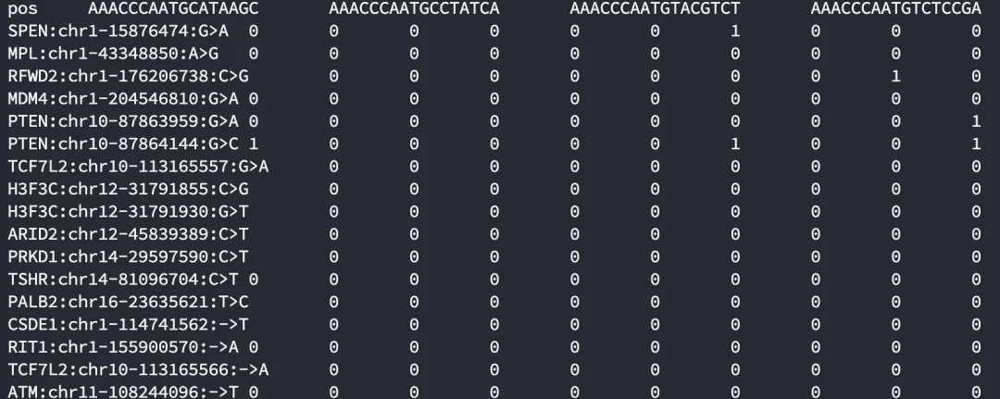
*.snp_indel.all_UMI.matrix：是经过最终过滤的位点在细胞中覆盖的UMI矩阵，行是突变，列是细胞。
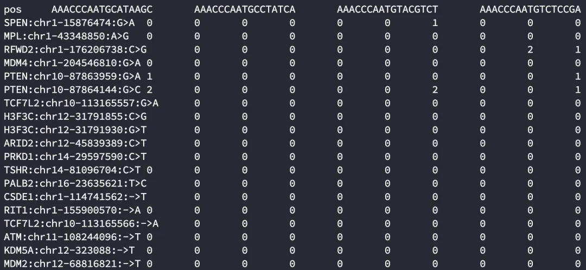
mutation_umap/*_snv_markers.xls结果如下所示：
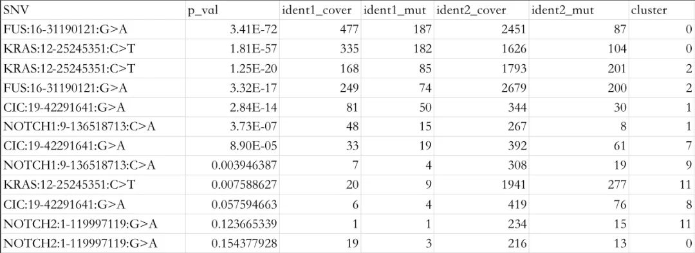
每列的含义为：SNV：突变位点
p_val：fisher检验的p值
ident1_cover：目标cluster/celltype中有多少细胞覆盖到了这个突变位点但是没发生突变
ident1_mut：目标cluster/celltype中有多少细胞带有这个突变
ident2_cover: 非目标cluster/celltype中有多少细胞覆盖到了这个突变位点但是没发生突变
ident2_mut：非目标cluster/celltype中有多少细胞带有这个突变
cluster：目标细胞类型
5.3.4 Seurat再处理及可视化
library(Seurat)
# 读取处理后的rds文件
scFAST <- readRDS('cell_line_mutout/mutation_umap/cellline_add_snv.rds')
# 与原来一样是一个Seurat对象，可以查看一下细胞类型：
DimPlot(scFAST)
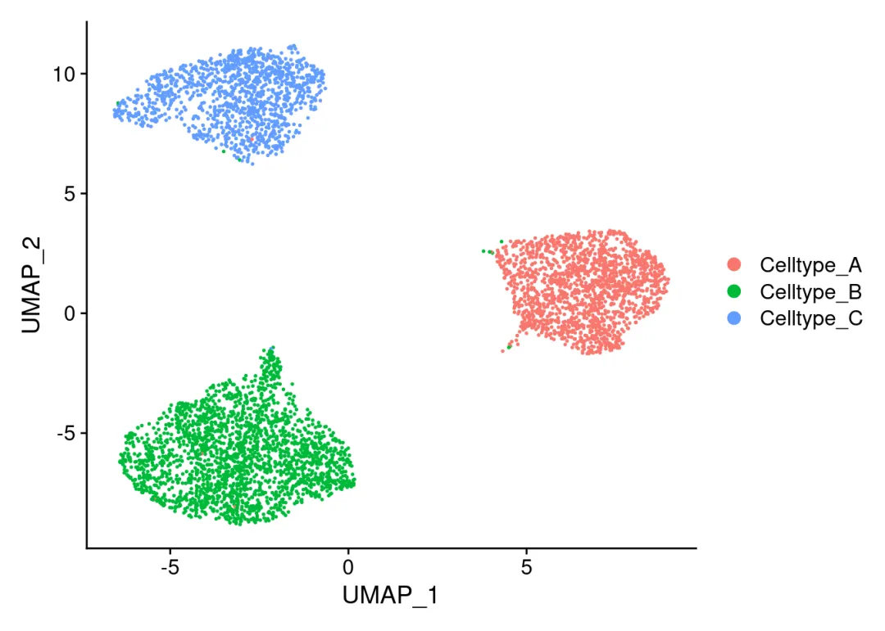
# 比输入的rds文件多出了几列metadata：
colnames(scFAST@meta.data)
## [1] "orig.ident" "nCount_RNA" "nFeature_RNA" "percent.mt"
## [5] "RNA_snn_res.0.5" "seurat_clusters" "celltype" "Sample"
## [9] "nCount_SNV_all" "nFeature_SNV_all" "nCount_SNV" "nFeature_SNV"
## [13] "CellType" "tmp_mut"
# 例如nFeature_SNV记录了每个细胞发生SNV的基因数：
FeaturePlot(scFAST,features = 'nFeature_SNV',label = T)
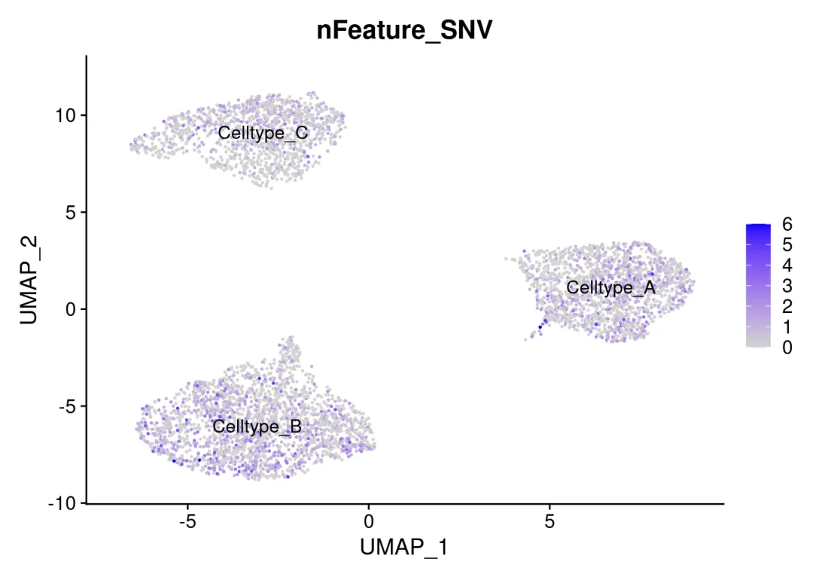
# 我们也可以读入本地的其它输出文件(例如这里记录snp信息的矩阵)加入Seurat的注释信息中：
snp_matrix <- read.table('/home/biomamba/analysis/xunyin/cell_line_mutout/varscan/cellline.snp_indel.alt_UMI.matrix',sep = '\t',header = T,row.names = 1)
# 这是一个列名为细胞名，行名为突变类型的矩阵：
snp_matrix[1:4,1:4]
## AAACCCACGATCGAAGG AAACCCAGCTCCAGCGT AAACCCAGCTTAACCTG
## MRPL20:chr1-1402212:G>C 0 0 0
## ATAD3C:chr1-1459164:A>G 0 0 0
## ATAD3C:chr1-1459173:G>A 0 0 0
## CDK11A:chr1-1721654:A>G 0 0 0
## AAACGAAATGGGAACAA
## MRPL20:chr1-1402212:G>C 0
## ATAD3C:chr1-1459164:A>G 0
## ATAD3C:chr1-1459173:G>A 0
## CDK11A:chr1-1721654:A>G 0
# 转换数据格式
library(dplyr)
snp_matrix <- t(snp_matrix)%>%as.data.frame()
# 查看所有细胞中突变数量最多的三个类型：
apply(snp_matrix, 2, function(x){sum(x)}) %>% sort(decreasing = T)%>% .[1:3]
## HMGA1:chr6-34243515:->A HAVCR1:chr5-157052561:A>G HAT1:chr2-171976274:T>C
## 178 115 94
# 将这三种突变类型加入metadata中
scFAST <- AddMetaData(scFAST,
metadata = snp_matrix[,c('HMGA1:chr6-34243515:->A', 'HAVCR1:chr5-157052561:A>G','HAT1:chr2-171976274:T>C')])
## Warning: Invalid name supplied, making object
## name syntactically valid. New object name is
## HMGA1.chr6.34243515...AHAVCR1.chr5.157052561.A.GHAT1.chr2.171976274.T.C;
## see ?make.names for more details on syntax validity
# 检查meta.data
colnames(scFAST@meta.data)
## [1] "orig.ident" "nCount_RNA"
## [3] "nFeature_RNA" "percent.mt"
## [5] "RNA_snn_res.0.5" "seurat_clusters"
## [7] "celltype" "Sample"
## [9] "nCount_SNV_all" "nFeature_SNV_all"
## [11] "nCount_SNV" "nFeature_SNV"
## [13] "CellType" "tmp_mut"
## [15] "HMGA1.chr6.34243515...A" "HAVCR1.chr5.157052561.A.G"
## [17] "HAT1.chr2.171976274.T.C"
# 可视化突变：
VlnPlot(scFAST,features = 'HMGA1:chr6-34243515:->A')
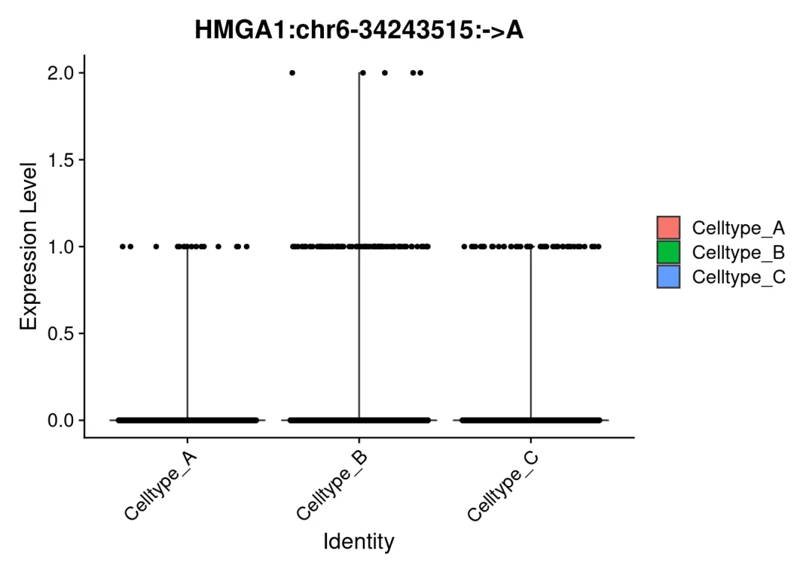
FeaturePlot(scFAST,features = 'HMGA1:chr6-34243515:->A')
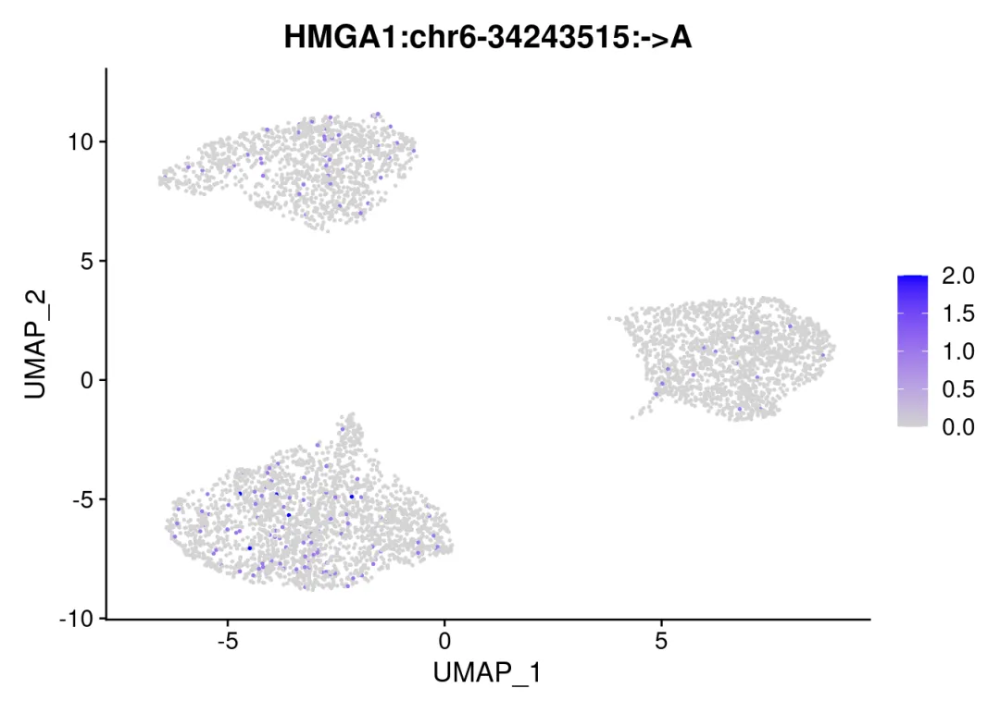
# 如果上述不够直观，可用突变发生的堆积柱状图展示：
# 统计突变数量的比例：
cell.prop<-as.data.frame(prop.table(table(scFAST$HMGA1.chr6.34243515...A, scFAST$CellType)))
colnames(cell.prop)<-c("SNP_Number","Celltype","proportion")
head(cell.prop)
## SNP_Number Celltype proportion
## 1 0 Celltype_A 0.316445517
## 2 1 Celltype_A 0.003216727
## 3 2 Celltype_A 0.000000000
## 4 0 Celltype_B 0.413751508
## 5 1 Celltype_B 0.020506634
## 6 2 Celltype_B 0.001005227
# 可视化
library(ggplot2)
# 可以看出Celltype_B的突变数量略高一些
ggplot(cell.prop,aes(Celltype,proportion,fill=SNP_Number))+
geom_bar(stat="identity",position="fill")+
ggtitle("")+
theme_bw()+
theme(axis.ticks.length=unit(0.5,'cm'))+
guides(fill=guide_legend(title=NULL))+
theme( axis.text.x.bottom = element_text(angle = 45,hjust = 1,vjust = 1))+
ggtitle('HMGA1:chr6-34243515:->A')
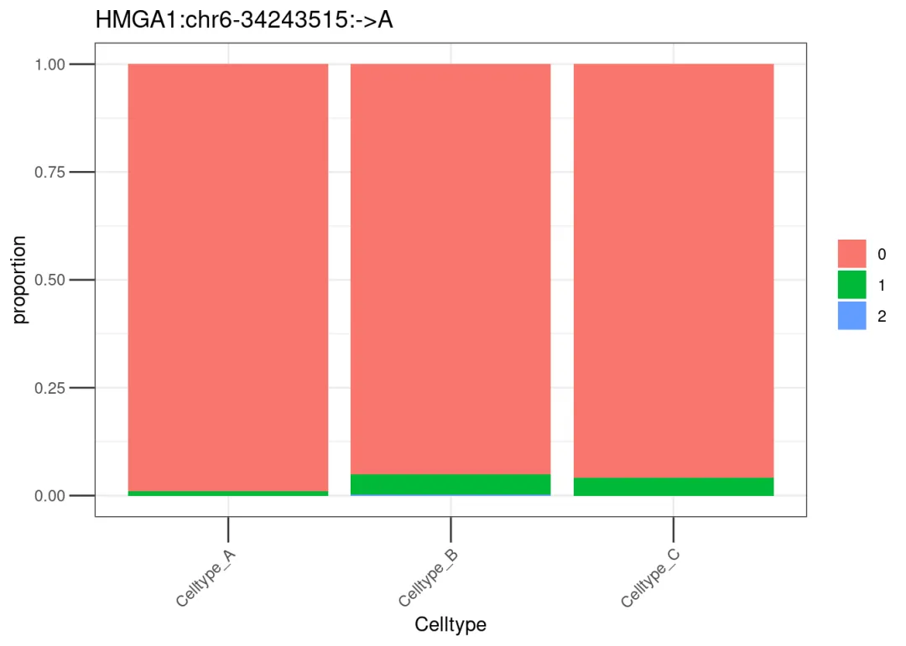
更多教程，敬请期待！
scFAST学习手册

与以往的教程一样，我们给大家准备了数据分析的学习手册，目前分为scFAST绪论、准备工作、fast模块、Seurat分析与可视化、mut模块等五节内容(更多章节持续创作中)及对应测试文件，大家可以添加企业微信回复关键字"scFAST学习手册 "即领: